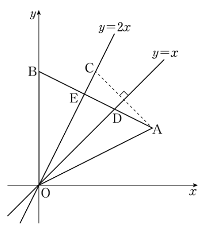

1. 2018년 3월 가형 12번 · 3점 · 고1 범위 · 도형의 이동 · G2H-04b#12
원본 (내부용)함수 $y=f(x)$의 그래프는 곡선 $y=- \frac{2}{x}$를 평행이동한 것이고 직선 $y=x$에 대하여 대칭이다. 함수 $f(x)$의 정의역이 $\{x|x != -2 .$인 모든 실수$\}$일 때, $f(4)$의 값은? [3점]
① $-3$② $- \frac{7}{3}$③ $- \frac{5}{3}$④ $-1$⑤ $- \frac{1}{3}$
원본 정답 ②
원본 풀이 (내부용)[출제의도] 도형의 이동과 유리함수의 그래프의 성질을 이용하여 함숫값을 구한다.
함수 \(f(x)\)의 그래프는 곡선 \(y=-\frac2x\)를 평행이동한 것이므로 두 상수 \(m,n\)에 대하여
\(
f(x)=-\frac2{x-m}+n
\)
이라 하자. 함수 \(f(x)\)의 그래프가 직선 \(y=x\)에 대하여 대칭이므로 곡선 \(y=f(x)\)의 두 점근선 \(x=m,\ y=n\)의 교점 \((m,n)\)이 직선 \(y=x\) 위에 있다. 따라서 \(m=n\).
함수 \(f(x)\)의 정의역이 \(\{x\mid x\ne-2\text{인 모든 실수}\}\)이므로 \(m=-2,\ n=-2\)이다.
\(
f(x)=-\frac2{x+2}-2
\)
이므로
\(
f(4)=-\frac2{4+2}-2=-\frac13-2=-\frac73
\)
생성기 숫자판 1/6 · G2H-04b#12함수 $y=f\left(x\right)$의 그래프는 곡선 $y=-\frac{1}{x}$을 평행이동한 것이고 직선 $y=x$에 대하여 대칭입니다. 함수 $f\left(x\right)$의 정의역이 $\left\{x\mid x\ne -3\text{인 모든 실수}\right\}$일 때, $f\left(2\right)$의 값으로 옳은 것을 고르세요.
① $-\frac{17}{5}$② $-\frac{16}{5}$③ $-3$④ $-\frac{14}{5}$⑤ $-\frac{13}{5}$
정답② $-\frac{16}{5}$ 점근선이 직선 $x=-3$이고 그래프가 직선 $y=x$에 대하여 대칭이므로 다른 점근선은 직선 $y=-3$ $f\left(x\right)=-\frac{1}{x+3}-3$ $f\left(2\right)=-\frac{1}{5}-3=-\frac{16}{5}$
숫자: 원본 2 2 4 → 쌍둥이 1 3 2 · 같은 수: 2
생성기 숫자판 2/6 · G2H-04b#12함수 $y=f\left(x\right)$의 그래프는 곡선 $y=-\frac{4}{x}$를 평행이동한 것이고 직선 $y=x$에 대하여 대칭입니다. 함수 $f\left(x\right)$의 정의역이 $\left\{x\mid x\ne 2\text{인 모든 실수}\right\}$일 때, $f\left(4\right)$의 값으로 옳은 것을 고르세요.
① $-1$② $0$③ $1$④ $2$⑤ $3$
정답② $0$ 점근선이 직선 $x=2$이고 그래프가 직선 $y=x$에 대하여 대칭이므로 다른 점근선은 직선 $y=2$ $f\left(x\right)=-\frac{4}{x-2}+2$ $f\left(4\right)=-2+2=0$
숫자: 원본 2 2 4 → 쌍둥이 4 2 4 · 같은 수: 2 4
생성기 숫자판 3/6 · G2H-04b#12함수 $y=f\left(x\right)$의 그래프는 곡선 $y=-\frac{4}{x}$를 평행이동한 것이고 직선 $y=x$에 대하여 대칭입니다. 함수 $f\left(x\right)$의 정의역이 $\left\{x\mid x\ne 1\text{인 모든 실수}\right\}$일 때, $f\left(2\right)$의 값으로 옳은 것을 고르세요.
① $-3$② $-2$③ $-1$④ $0$⑤ $1$
정답① $-3$ 점근선이 직선 $x=1$이고 그래프가 직선 $y=x$에 대하여 대칭이므로 다른 점근선은 직선 $y=1$ $f\left(x\right)=-\frac{4}{x-1}+1$ $f\left(2\right)=-4+1=-3$
숫자: 원본 2 2 4 → 쌍둥이 4 1 2 · 같은 수: 2 4
생성기 숫자판 4/6 · G2H-04b#12함수 $y=f\left(x\right)$의 그래프는 곡선 $y=-\frac{2}{x}$를 평행이동한 것이고 직선 $y=x$에 대하여 대칭입니다. 함수 $f\left(x\right)$의 정의역이 $\left\{x\mid x\ne 1\text{인 모든 실수}\right\}$일 때, $f\left(5\right)$의 값으로 옳은 것을 고르세요.
① $\frac{1}{2}$② $\frac{3}{4}$③ $1$④ $\frac{5}{4}$⑤ $\frac{3}{2}$
정답① $\frac{1}{2}$ 점근선이 직선 $x=1$이고 그래프가 직선 $y=x$에 대하여 대칭이므로 다른 점근선은 직선 $y=1$ $f\left(x\right)=-\frac{2}{x-1}+1$ $f\left(5\right)=-\frac{1}{2}+1=\frac{1}{2}$
숫자: 원본 2 2 4 → 쌍둥이 2 1 5 · 같은 수: 2
생성기 숫자판 5/6 · G2H-04b#12함수 $y=f\left(x\right)$의 그래프는 곡선 $y=\frac{1}{x}$을 평행이동한 것이고 직선 $y=x$에 대하여 대칭입니다. 함수 $f\left(x\right)$의 정의역이 $\left\{x\mid x\ne 2\text{인 모든 실수}\right\}$일 때, $f\left(3\right)$의 값으로 옳은 것을 고르세요.
① $1$② $2$③ $3$④ $4$⑤ $5$
정답③ $3$ 점근선이 직선 $x=2$이고 그래프가 직선 $y=x$에 대하여 대칭이므로 다른 점근선은 직선 $y=2$ $f\left(x\right)=\frac{1}{x-2}+2$ $f\left(3\right)=1+2=3$
숫자: 원본 2 2 4 → 쌍둥이 1 2 3 · 같은 수: 2
생성기 숫자판 6/6 · G2H-04b#12함수 $y=f\left(x\right)$의 그래프는 곡선 $y=-\frac{2}{x}$를 평행이동한 것이고 직선 $y=x$에 대하여 대칭입니다. 함수 $f\left(x\right)$의 정의역이 $\left\{x\mid x\ne 3\text{인 모든 실수}\right\}$일 때, $f\left(4\right)$의 값으로 옳은 것을 고르세요.
① $1$② $2$③ $3$④ $4$⑤ $5$
정답① $1$ 점근선이 직선 $x=3$이고 그래프가 직선 $y=x$에 대하여 대칭이므로 다른 점근선은 직선 $y=3$ $f\left(x\right)=-\frac{2}{x-3}+3$ $f\left(4\right)=-2+3=1$
숫자: 원본 2 2 4 → 쌍둥이 2 3 4 · 같은 수: 2 4
2. 2018년 3월 가형 28번 · 4점 · 고1 범위 · 도형의 이동 · 4점 쌍둥이
원본 (내부용)그림과 같이 좌표평면 위에 제$1$사분면의 점 $\mathrm{A}$와 $y$축 위의 점 $\mathrm{B}$에 대하여 $\overline{AB} = \overline{AO} =2 \sqrt{5}$인 이등변삼각형 $\mathrm{OAB}$가 있다. 점 $\mathrm{A}$를 직선 $y=x$에 대하여 대칭이동한 점을 $\mathrm{C}$라 하면 점 $\mathrm{C}$는 직선 $y=2x$ 위의 점이다. 선분 $\mathrm{AB}$가 두 직선 $y=x$, $y=2x$와 만나는 점을 각각 $\mathrm{D}$, $\mathrm{E}$라 할 때, 삼각형 $\mathrm{ODE}$의 외접원의 둘레의 길이를 $k \pi$라 하자. $9k^{2}$의 값을 구하시오. (단, $\mathrm{O}$는 원점이다.) [4점]

원본 정답 128
원본 풀이 (내부용)[출제의도] 도형의 이동과 직선의 수직 조건을 이용하여 원의 둘레의 길이를 구한다.
두 상수 \(a,b\)에 대하여 점 A의 좌표를 \((a,b)\)라 하면 점 C는 점 A를 직선 \(y=x\)에 대하여 대칭이동한 점이므로 점 C의 좌표는 \((b,a)\)이다. 점 C는 직선 \(y=2x\) 위의 점이므로 \(a=2b\)이다. 따라서 점 A의 좌표는 \(A(2b,b)\).
\(
\overline{OA}=2\sqrt5
\)
이므로
\(
\overline{OA}^{\,2}=(2\sqrt5)^2=20,\qquad
(2b)^2+b^2=20,\qquad 5b^2=20.
\)
\(b^2=4\)에서 \(b=2\). 따라서 두 점 A, C의 좌표는
\(
A(4,2),\qquad C(2,4).
\)
\(y\)축 위의 점 B의 좌표를 \((0,c)\)라 하면
\(
\overline{AB}=\overline{OA}=2\sqrt5,\qquad
\overline{AB}^{\,2}=(2\sqrt5)^2=20.
\)
\(
\begin{aligned}
(4-0)^2+(2-c)^2&=20\\
16+4-4c+c^2&=20\\
-4c+c^2&=0\\
c(c-4)&=0.
\end{aligned}
\)
\(c>0\)이므로 \(c=4\). 따라서 점 B의 좌표는 \((0,4)\)이다.
점 D는 직선 AB와 직선 \(y=x\)의 교점이므로
\(
x=-\frac12x+4,\qquad \frac32x=4,
\qquad x=\frac83,\quad y=\frac83.
\)
따라서
\(
D\left(\frac83,\frac83\right).
\)
한편 직선 AB의 기울기는 \(-\frac12\)이고 직선 \(y=2x\)의 기울기는 2이므로 두 직선은 서로 수직이다. 따라서 삼각형 ODE는 \(\angle OED=90^\circ\)인 직각삼각형이고, 삼각형 ODE의 외접원의 지름의 길이는 선분 OD의 길이와 같다.
\(
\overline{OD}
=\sqrt{\left(\frac83\right)^2+\left(\frac83\right)^2}
=\frac83\sqrt2.
\)
삼각형 ODE의 외접원의 둘레의 길이는
\(
k\pi=\frac83\sqrt2\pi,\qquad k=\frac83\sqrt2.
\)
따라서
\(
9k^2=9\times\left(\frac83\sqrt2\right)^2
=9\times\frac{128}{9}=128.
\)
쌍둥이 1/5 · 4점 쌍둥이좌표평면 위에 제$1$사분면의 점 $\mathrm{A}$와 $y$축 위의 점 $\mathrm{B}$에 대하여 $\overline{\mathrm{AB}}=\overline{\mathrm{AO}}=2\sqrt{17}$인 이등변삼각형 $\mathrm{OAB}$가 있습니다. 점 $\mathrm{A}$를 직선 $y=x$에 대하여 대칭이동한 점을 $\mathrm{C}$라 하면 점 $\mathrm{C}$는 직선 $y=4x$ 위의 점입니다. 선분 $\mathrm{AB}$가 두 직선 $y=x$, $y=4x$와 만나는 점을 각각 $\mathrm{D}$, $\mathrm{E}$라 할 때, 삼각형 $\mathrm{ODE}$의 외접원의 둘레의 길이를 $k\pi$라 합니다. $25k^{2}$의 값을 구하세요. (단, $\mathrm{O}$는 원점입니다.)
정답$512$ 점 $\mathrm{C}$가 $y=4x$ 위에 있으므로 점 $\mathrm{A}$는 $y=\frac{1}{4}x$ 위에 있고, $\mathrm{A}(4a,\ a)$라 하면 $\overline{\mathrm{AO}}=\sqrt{17}a=2\sqrt{17}$에서 $a=2$, $\mathrm{A}(8,\ 2)$ $\overline{\mathrm{AB}}=\overline{\mathrm{AO}}$이므로 $\mathrm{B}(0,\ 4)$이고 직선 $\mathrm{AB}$는 $y=-\frac{1}{4}x+4$ $\mathrm{D}\left(\frac{16}{5},\ \frac{16}{5}\right)$, $\mathrm{E}\left(\frac{16}{17},\ \frac{64}{17}\right)$이고 $\overline{\mathrm{DE}}=\frac{48\sqrt{17}}{85}$ $\angle\mathrm{DOE}$에서 $\tan(\angle\mathrm{DOE})=\frac{4-1}{1+4}=\frac{3}{5}$이므로 $\sin(\angle\mathrm{DOE})=\frac{3\sqrt{34}}{34}$, 사인법칙에서 외접원의 반지름은 $\frac{\overline{\mathrm{DE}}}{2\sin(\angle\mathrm{DOE})}=\frac{8\sqrt{2}}{5}$ $k=2\times\frac{8\sqrt{2}}{5}=\frac{16\sqrt{2}}{5}$이므로 $25k^{2}=512$
쌍둥이 2/5 · 4점 쌍둥이좌표평면 위에 제$1$사분면의 점 $\mathrm{A}$와 $y$축 위의 점 $\mathrm{B}$에 대하여 $\overline{\mathrm{AB}}=\overline{\mathrm{AO}}=2\sqrt{10}$인 이등변삼각형 $\mathrm{OAB}$가 있습니다. 점 $\mathrm{A}$를 직선 $y=x$에 대하여 대칭이동한 점을 $\mathrm{C}$라 하면 점 $\mathrm{C}$는 직선 $y=3x$ 위의 점입니다. 선분 $\mathrm{AB}$가 두 직선 $y=x$, $y=3x$와 만나는 점을 각각 $\mathrm{D}$, $\mathrm{E}$라 할 때, 삼각형 $\mathrm{ODE}$의 외접원의 둘레의 길이를 $k\pi$라 합니다. $5k^{2}$의 값을 구하세요. (단, $\mathrm{O}$는 원점입니다.)
정답$90$ 점 $\mathrm{C}$가 $y=3x$ 위에 있으므로 점 $\mathrm{A}$는 $y=\frac{1}{3}x$ 위에 있고, $\mathrm{A}(3a,\ a)$라 하면 $\overline{\mathrm{AO}}=\sqrt{10}a=2\sqrt{10}$에서 $a=2$, $\mathrm{A}(6,\ 2)$ $\overline{\mathrm{AB}}=\overline{\mathrm{AO}}$이므로 $\mathrm{B}(0,\ 4)$이고 직선 $\mathrm{AB}$는 $y=-\frac{1}{3}x+4$ $\mathrm{D}\left(3,\ 3\right)$, $\mathrm{E}\left(\frac{6}{5},\ \frac{18}{5}\right)$이고 $\overline{\mathrm{DE}}=\frac{3\sqrt{10}}{5}$ $\angle\mathrm{DOE}$에서 $\tan(\angle\mathrm{DOE})=\frac{3-1}{1+3}=\frac{1}{2}$이므로 $\sin(\angle\mathrm{DOE})=\frac{\sqrt{5}}{5}$, 사인법칙에서 외접원의 반지름은 $\frac{\overline{\mathrm{DE}}}{2\sin(\angle\mathrm{DOE})}=\frac{3\sqrt{2}}{2}$ $k=2\times\frac{3\sqrt{2}}{2}=3\sqrt{2}$이므로 $5k^{2}=90$
쌍둥이 3/5 · 4점 쌍둥이좌표평면 위에 제$1$사분면의 점 $\mathrm{A}$와 $y$축 위의 점 $\mathrm{B}$에 대하여 $\overline{\mathrm{AB}}=\overline{\mathrm{AO}}=3\sqrt{26}$인 이등변삼각형 $\mathrm{OAB}$가 있습니다. 점 $\mathrm{A}$를 직선 $y=x$에 대하여 대칭이동한 점을 $\mathrm{C}$라 하면 점 $\mathrm{C}$는 직선 $y=5x$ 위의 점입니다. 선분 $\mathrm{AB}$가 두 직선 $y=x$, $y=5x$와 만나는 점을 각각 $\mathrm{D}$, $\mathrm{E}$라 할 때, 삼각형 $\mathrm{ODE}$의 외접원의 둘레의 길이를 $k\pi$라 합니다. $k^{2}$의 값을 구하세요. (단, $\mathrm{O}$는 원점입니다.)
정답$50$ 점 $\mathrm{C}$가 $y=5x$ 위에 있으므로 점 $\mathrm{A}$는 $y=\frac{1}{5}x$ 위에 있고, $\mathrm{A}(5a,\ a)$라 하면 $\overline{\mathrm{AO}}=\sqrt{26}a=3\sqrt{26}$에서 $a=3$, $\mathrm{A}(15,\ 3)$ $\overline{\mathrm{AB}}=\overline{\mathrm{AO}}$이므로 $\mathrm{B}(0,\ 6)$이고 직선 $\mathrm{AB}$는 $y=-\frac{1}{5}x+6$ $\mathrm{D}\left(5,\ 5\right)$, $\mathrm{E}\left(\frac{15}{13},\ \frac{75}{13}\right)$이고 $\overline{\mathrm{DE}}=\frac{10\sqrt{26}}{13}$ $\angle\mathrm{DOE}$에서 $\tan(\angle\mathrm{DOE})=\frac{5-1}{1+5}=\frac{2}{3}$이므로 $\sin(\angle\mathrm{DOE})=\frac{2\sqrt{13}}{13}$, 사인법칙에서 외접원의 반지름은 $\frac{\overline{\mathrm{DE}}}{2\sin(\angle\mathrm{DOE})}=\frac{5\sqrt{2}}{2}$ $k=2\times\frac{5\sqrt{2}}{2}=5\sqrt{2}$이므로 $k^{2}=50$
숫자: 원본 1 2 5 2 2 9 2 → 쌍둥이 1 3 26 5 5 · 같은 수: 1 5
쌍둥이 4/5 · 4점 쌍둥이좌표평면에서 제1사분면의 점 $A$와 $y$축 위의 점 $B$에 대하여 $AB=AO=2\sqrt{10}$인 이등변삼각형 $OAB$가 있습니다. $A$를 $y=x$에 대하여 대칭이동한 점 $C$가 $y=3x$ 위에 있습니다. $AB$와 $y=x$, $y=3x$의 교점을 각각 $D,E$라 할 때, 삼각형 $ODE$의 외접원의 둘레를 $k\pi$라 합니다. $k^2$을 구하세요.
① $14$② $16$③ $18$④ $20$⑤ $22$
정답③ $18$ $A=(3s,s)$라 하면 $C=(s,3s)$이고 $AB=AO$이므로 $B=(0,2s)$입니다. $AO=2\sqrt{10}$에서 $10s^2=40$, 따라서 $s=2$입니다. $AB$의 방정식은 $y=-\frac{x}{3}+4$입니다. 따라서 $D=AB\cap y=x=(3,3)$, $E=AB\cap y=3x=(\frac{6}{5},\frac{18}{5})$입니다. 일반적으로 $A=(rs,s)$이고 교점 직선의 기울기가 $1,r$일 때 $R^2=\frac{2L^2r^2}{(r+1)^2(r^2+1)}$입니다. 여기서는 $r=3$, $L^2=40$이므로 $R^2=\frac{9}{2}$입니다. $k=2R$이므로 $k^2=4R^2=18$입니다.
숫자: 원본 1 2 5 2 2 9 2 → 쌍둥이 1 2 10 3 3 · 같은 수: 1 2
쌍둥이 5/5 · 4점 쌍둥이좌표평면에서 제1사분면의 점 $A$와 $y$축 위의 점 $B$에 대하여 $AB=AO=5\sqrt{17}$인 이등변삼각형 $OAB$가 있습니다. $A=(4s,s)$이고 $C=(s,4s)$가 $y=4x$ 위에 있습니다. $AB$와 $y=x$, $y=4x$의 교점을 각각 $D,E$라 할 때, 삼각형 $ODE$의 외접원의 둘레를 $k\pi$라 합니다. $k^2$을 구하세요.
① $124$② $126$③ $128$④ $130$⑤ $132$
정답③ $128$ $A=(4s,s)$라 하면 $AO=\sqrt{17}s=5\sqrt{17}$이므로 $s=5$, $B=(0,10)$입니다. $AB$의 방정식은 $y=-\frac{x}{4}+10$입니다. 따라서 $D=AB\cap y=x=(8,8)$이고 $E=AB\cap y=4x=(\frac{40}{17},\frac{160}{17})$입니다. 일반적으로 $A=(rs,s)$이고 교점 직선의 기울기가 $1,r$일 때 $R^2=\frac{2L^2r^2}{(r+1)^2(r^2+1)}$입니다. 여기서는 $r=4$, $L^2=425$이므로 $R^2=32$입니다. $k=2R$이므로 $k^2=4R^2=128$입니다.
3. 2018년 3월 나형 8번 · 3점 · 고1 범위 · 도형의 이동 · G2H-04b#5
원본 (내부용)함수 $y= \sqrt{2x}$의 그래프를 $x$축의 방향으로 $1$만큼, $y$축의 방향으로 $3$만큼 평행이동한 그래프가 점 $(9,a)$를 지날 때, $a$의 값은? [3점]
① $5$② $6$③ $7$④ $8$⑤ $9$
원본 정답 ③
원본 풀이 (내부용)[출제의도] 무리함수의 그래프의 평행이동을 이해하여 상수의 값을 구한다.
함수 \(y=\sqrt{2x}\)의 그래프를 \(x\)축의 양의 방향으로 1만큼, \(y\)축의 방향으로 3만큼 평행이동하면
\(
y=\sqrt{2(x-1)}+3
\)
함수 \(y=\sqrt{2(x-1)}+3\)의 그래프가 점 \((9,a)\)를 지나므로
\(
\begin{aligned}
a&=\sqrt{2(9-1)}+3\\
&=4+3=7
\end{aligned}
\)
생성기 숫자판 1/6 · G2H-04b#5함수 $y=\sqrt{2x}$의 그래프를 $x$축의 방향으로 $4$만큼, $y$축의 방향으로 $-2$만큼 평행이동한 그래프가 점 $\left(12,\ a\right)$를 지날 때, $a$의 값으로 옳은 것을 고르세요.
① $2$② $3$③ $4$④ $5$⑤ $6$
정답① $2$ 평행이동한 그래프의 식은 $y=\sqrt{2\left(x-4\right)}-2$ $x=12$를 대입하면 $a=\sqrt{2\times 8}-2=4-2=2$
숫자: 원본 2 1 3 9 → 쌍둥이 2 4 2 12 · 같은 수: 2
생성기 숫자판 2/6 · G2H-04b#5함수 $y=\sqrt{3x}$의 그래프를 $x$축의 방향으로 $-3$만큼, $y$축의 방향으로 $-1$만큼 평행이동한 그래프가 점 $\left(24,\ a\right)$를 지날 때, $a$의 값으로 옳은 것을 고르세요.
① $6$② $7$③ $8$④ $9$⑤ $10$
정답③ $8$ 평행이동한 그래프의 식은 $y=\sqrt{3\left(x+3\right)}-1$ $x=24$를 대입하면 $a=\sqrt{3\times 27}-1=9-1=8$
숫자: 원본 2 1 3 9 → 쌍둥이 3 3 1 24 · 같은 수: 1 3
생성기 숫자판 3/6 · G2H-04b#5함수 $y=\sqrt{3x}$의 그래프를 $x$축의 방향으로 $4$만큼, $y$축의 방향으로 $4$만큼 평행이동한 그래프가 점 $\left(7,\ a\right)$를 지날 때, $a$의 값으로 옳은 것을 고르세요.
① $7$② $8$③ $9$④ $10$⑤ $11$
정답① $7$ 평행이동한 그래프의 식은 $y=\sqrt{3\left(x-4\right)}+4$ $x=7$을 대입하면 $a=\sqrt{3\times 3}+4=3+4=7$
숫자: 원본 2 1 3 9 → 쌍둥이 3 4 4 7 · 같은 수: 3
생성기 숫자판 4/6 · G2H-04b#5함수 $y=\sqrt{2x}$의 그래프를 $x$축의 방향으로 $-2$만큼, $y$축의 방향으로 $5$만큼 평행이동한 그래프가 점 $\left(6,\ a\right)$를 지날 때, $a$의 값으로 옳은 것을 고르세요.
① $6$② $7$③ $8$④ $9$⑤ $10$
정답④ $9$ 평행이동한 그래프의 식은 $y=\sqrt{2\left(x+2\right)}+5$ $x=6$을 대입하면 $a=\sqrt{2\times 8}+5=4+5=9$
숫자: 원본 2 1 3 9 → 쌍둥이 2 2 5 6 · 같은 수: 2
생성기 숫자판 5/6 · G2H-04b#5함수 $y=\sqrt{3x}$의 그래프를 $x$축의 방향으로 $4$만큼, $y$축의 방향으로 $1$만큼 평행이동한 그래프가 점 $\left(7,\ a\right)$를 지날 때, $a$의 값으로 옳은 것을 고르세요.
① $4$② $5$③ $6$④ $7$⑤ $8$
정답① $4$ 평행이동한 그래프의 식은 $y=\sqrt{3\left(x-4\right)}+1$ $x=7$을 대입하면 $a=\sqrt{3\times 3}+1=3+1=4$
숫자: 원본 2 1 3 9 → 쌍둥이 3 4 1 7 · 같은 수: 1 3
생성기 숫자판 6/6 · G2H-04b#5함수 $y=\sqrt{2x}$의 그래프를 $x$축의 방향으로 $1$만큼, $y$축의 방향으로 $1$만큼 평행이동한 그래프가 점 $\left(19,\ a\right)$를 지날 때, $a$의 값으로 옳은 것을 고르세요.
① $3$② $4$③ $5$④ $6$⑤ $7$
정답⑤ $7$ 평행이동한 그래프의 식은 $y=\sqrt{2\left(x-1\right)}+1$ $x=19$를 대입하면 $a=\sqrt{2\times 18}+1=6+1=7$
숫자: 원본 2 1 3 9 → 쌍둥이 2 1 1 19 · 같은 수: 1 2
4. 2018년 3월 나형 24번 · 3점 · 고1 범위 · 도형의 이동 · G2H-05b#2
원본 (내부용)좌표평면에서 원 $x^{2} +y^{2} +10x-12y+45=0$을 원점에 대하여 대칭이동한 원을 $C_{1}$이라 하고, 원 $C_{1}$을 $x$축에 대하여 대칭이동한 원을 $C_{2}$라 하자. 원 $C_{2}$의 중심의 좌표를 $(a,b)$라 할 때, $10a+b$의 값을 구하시오. [3점]
원본 정답 56
원본 풀이 (내부용)[출제의도] 도형의 대칭이동을 이해하여 원의 중심의 좌표를 구한다.
원
\(
x^2+y^2+10x-12y+45=0
\)
은
\(
(x+5)^2+(y-6)^2=16
\)
이므로 중심의 좌표는 \((-5,6)\)이다.
원 \(C_1\)의 중심 \((-5,6)\)을 원점에 대하여 대칭이동한 점이므로 \((5,-6)\)이다.
원 \(C_2\)의 중심의 좌표는 점 \((5,-6)\)을 \(x\)축에 대하여 대칭이동한 점이므로 \((5,6)\)이다.
\(
a=5,\quad b=6
\)
이므로
\(
10a+b=50+6=56
\)
생성기 숫자판 1/6 · G2H-05b#2좌표평면에서 원 $x^{2}+y^{2}-4x+10y+20=0$을 $x$축에 대하여 대칭이동한 원을 $C_{1}$이라 하고, 원 $C_{1}$을 직선 $y=x$에 대하여 대칭이동한 원을 $C_{2}$라 합시다. 원 $C_{2}$의 중심의 좌표를 $\left(a,\ b\right)$라 할 때, $ab$의 값을 구하세요.
정답$10$ $\left(x-2\right)^{2}+\left(y+5\right)^{2}=9$이므로 중심은 $\left(2,\ -5\right)$ $x$축에 대하여 대칭이동하면 중심은 $\left(2,\ 5\right)$ 직선 $y=x$에 대하여 대칭이동하면 중심은 $\left(5,\ 2\right)$ 따라서 $ab=10$
생성기 숫자판 2/6 · G2H-05b#2좌표평면에서 원 $x^2+y^2-6x-8y+21=0$을 원점에 대하여 대칭이동한 원을 $C_{1}$이라 하고, 원 $C_{1}$을 $y$축에 대하여 대칭이동한 원을 $C_{2}$라 합시다. 원 $C_{2}$의 중심의 좌표를 $\left(a,\ b\right)$라 할 때, $10a+b$의 값을 구하세요.
정답$26$ $(x-3)^2+(y-4)^2=4$이므로 중심은 $\left(3,\ 4\right)$ 원점에 대하여 대칭이동하면 중심은 $\left(-3,\ -4\right)$ $y$축에 대하여 대칭이동하면 중심은 $\left(3,\ -4\right)$ 따라서 $10a+b=10\times 3+\left(-4\right)=26$
생성기 숫자판 3/6 · G2H-05b#2좌표평면에서 원 $x^{2}+y^{2}-2x+4y-11=0$을 직선 $y=x$에 대하여 대칭이동한 원을 $C_{1}$이라 하고, 원 $C_{1}$을 $y$축에 대하여 대칭이동한 원을 $C_{2}$라 합시다. 원 $C_{2}$의 중심의 좌표를 $\left(a,\ b\right)$라 할 때, $ab$의 값을 구하세요.
정답$2$ $\left(x-1\right)^{2}+\left(y+2\right)^{2}=16$이므로 중심은 $\left(1,\ -2\right)$ 직선 $y=x$에 대하여 대칭이동하면 중심은 $\left(-2,\ 1\right)$ $y$축에 대하여 대칭이동하면 중심은 $\left(2,\ 1\right)$ 따라서 $ab=2$
생성기 숫자판 4/6 · G2H-05b#2좌표평면에서 원 $x^{2}+y^{2}+8x-8y+31=0$을 원점에 대하여 대칭이동한 원을 $C_{1}$이라 하고, 원 $C_{1}$을 $y$축에 대하여 대칭이동한 원을 $C_{2}$라 합시다. 원 $C_{2}$의 중심의 좌표를 $\left(a,\ b\right)$라 할 때, $10a+b$의 값을 구하세요.
정답$-44$ $\left(x+4\right)^{2}+\left(y-4\right)^{2}=1$이므로 중심은 $\left(-4,\ 4\right)$ 원점에 대하여 대칭이동하면 중심은 $\left(4,\ -4\right)$ $y$축에 대하여 대칭이동하면 중심은 $\left(-4,\ -4\right)$ 따라서 $10a+b=-44$
생성기 숫자판 5/6 · G2H-05b#2좌표평면에서 원 $x^{2}+y^{2}-2x+2y-7=0$을 직선 $y=x$에 대하여 대칭이동한 원을 $C_{1}$이라 하고, 원 $C_{1}$을 $x$축에 대하여 대칭이동한 원을 $C_{2}$라 합시다. 원 $C_{2}$의 중심의 좌표를 $\left(a,\ b\right)$라 할 때, $ab$의 값을 구하세요.
정답$1$ $\left(x-1\right)^{2}+\left(y+1\right)^{2}=9$이므로 중심은 $\left(1,\ -1\right)$ 직선 $y=x$에 대하여 대칭이동하면 중심은 $\left(-1,\ 1\right)$ $x$축에 대하여 대칭이동하면 중심은 $\left(-1,\ -1\right)$ 따라서 $ab=1$
생성기 숫자판 6/6 · G2H-05b#2좌표평면에서 원 $x^{2}+y^{2}+4x+6y-3=0$을 $y$축에 대하여 대칭이동한 원을 $C_{1}$이라 하고, 원 $C_{1}$을 직선 $y=x$에 대하여 대칭이동한 원을 $C_{2}$라 합시다. 원 $C_{2}$의 중심의 좌표를 $\left(a,\ b\right)$라 할 때, $a+b$의 값을 구하세요.
정답$-1$ $\left(x+2\right)^{2}+\left(y+3\right)^{2}=16$이므로 중심은 $\left(-2,\ -3\right)$ $y$축에 대하여 대칭이동하면 중심은 $\left(2,\ -3\right)$ 직선 $y=x$에 대하여 대칭이동하면 중심은 $\left(-3,\ 2\right)$ 따라서 $a+b=-1$
원본 (내부용)[그림 $1$]과 같이 $\overline{\mathrm{AD}}=8$, $\overline{\mathrm{BC}}=4$이고 높이가 $2$인 등변사다리꼴 모양의 종이를 접어 모양을 만들려고 한다. 선분 $\mathrm{BC}$의 중점을 $\mathrm{M}$이라 하고, 선분 $\mathrm{AD}$를 $1:3$으로 내분하는 점을 $\mathrm{P}$, 선분 $\mathrm{AD}$를 $3:1$로 내분하는 점을 $\mathrm{Q}$라 하자. 선분 $\mathrm{\pm }$과 선분 $\mathrm{QM}$을 접는 선으로 하여 두 점 $\mathrm{B}$, $\mathrm{C}$가 선분 $\mathrm{AD}$의 중점에 오도록 종이를 접으면 [그림 $2$]와 같이 두 점 $\mathrm{A}$, $\mathrm{D}$는 각각 점 $\mathrm{A}'$, $\mathrm{D}'$으로 옮겨진다. 점 $\mathrm{D}'$과 직선 $\mathrm{A}'M$ 사이의 거리를 $d$라 할 때, $50d^2$의 값을 구하시오. (단, 모든 점은 같은 평면 위에 있고, 종이의 두께는 무시한다.) [4점] [그림 $1$] [그림 $2$]
원본 정답 640
원본 풀이 (내부용)[출제의도] 도형의 대칭이동을 이용하여 점과 직선 사이의 거리 문제를 해결한다.
선분 \(BC\)를 \(x\)축, 점 \(M\)을 원점으로 하면
\(
A(-4,2),\ B(-2,0),\ C(2,0),\ D(4,2)
\)
이다.
선분 \(AD\)를 \(1:3\)으로 내분하는 점 \(P\)의 좌표는
\(
P(-2,2)
\)
선분 \(AD\)를 \(3:1\)로 내분하는 점 \(Q\)의 좌표는
\(
Q(2,2)
\)
점 \(D'\)는 점 \(D\)를 직선 \(y=x\)에 대하여 대칭이동한 점이므로
\(
D'(2,4)
\)
점 \(A'\)는 점 \(D'\)와 \(y\)축에 대하여 대칭인 점이므로 점 \(A'\)의 좌표는
\(
A'(-2,4)
\)
직선 \(A'M\)의 방정식은
\(
2x+y=0
\)
점 \(D'(2,4)\)와 직선 \(2x+y=0\) 사이의 거리를 \(d\)라 하면
\(
d=\frac{|2\times2+4|}{\sqrt{2^2+1^2}}
=\frac8{\sqrt5}
\)
따라서
\(
50d^2=50\times\frac{64}{5}=640
\)
쌍둥이 1/5 · 4점 쌍둥이윗변 길이가 $10$, 아랫변 $AD$의 길이가 $14$, 높이가 $5$인 이등변사다리꼴 종이가 있다. $M$은 $BC$의 중점이고, $P,Q$는 각각 $AD$를 $2:12$, $12:2$로 내분한다. $PM,QM$을 접는 선으로 하여 $B,C$가 $AD$의 중점에 오도록 접는다. 옮겨진 점을 $A',D'$라 할 때, $D'$과 직선 $A'M$ 사이의 거리를 $d$라 하자. $5d^2$의 값을 구하시오.
정답$90$ 좌표를 $A(0,0),D(14,0),B(2,5),C(12,5)$로 두면 $M(7,5),P(2,0),Q(12,0)$이다. $h=b/2$이므로 두 접기는 각각 $B,C$를 $(L/2,0)$으로 보낸다. $PM$과 $QM$의 기울기는 각각 1과 -1이다. 반사하여 $A'=(0,-2)$, $D'=(10,2)$를 얻는다. 직선 $A'M$의 방정식은 $y=x-2$이다. 점 $D'$에서 이 직선까지의 거리 제곱은 $d^2=18$이다. 따라서 $5d^2=90$.
쌍둥이 2/5 · 4점 쌍둥이$\overline{\mathrm{AD}}=10$, $\overline{\mathrm{BC}}=6$이고 높이가 $3$인 등변사다리꼴 모양의 종이가 있습니다. 선분 $\mathrm{BC}$의 중점을 $\mathrm{M}$, 선분 $\mathrm{AD}$를 $1:4$로 내분하는 점을 $\mathrm{P}$, $4:1$로 내분하는 점을 $\mathrm{Q}$라 합니다. 선분 $\mathrm{PM}$과 선분 $\mathrm{QM}$을 접는 선으로 하여 두 점 $\mathrm{B}$, $\mathrm{C}$가 선분 $\mathrm{AD}$의 중점에 오도록 종이를 접었더니 두 점 $\mathrm{A}$, $\mathrm{D}$가 각각 점 $\mathrm{A'}$, $\mathrm{D'}$으로 옮겨졌습니다. 점 $\mathrm{D'}$과 직선 $\mathrm{A'M}$ 사이의 거리를 $d$라 할 때, $17d^{2}$의 값을 구하세요. (단, 모든 점은 같은 평면 위에 있고, 종이의 두께는 무시합니다.)
정답$450$ $\mathrm{A}(0,\ 0)$, $\mathrm{D}(10,\ 0)$, $\mathrm{B}\left(2,\ 3\right)$, $\mathrm{C}\left(8,\ 3\right)$로 두면 $\mathrm{M}\left(5,\ 3\right)$, $\mathrm{P}\left(2,\ 0\right)$, $\mathrm{Q}\left(8,\ 0\right)$ 접으면 점 $\mathrm{A}$는 직선 $\mathrm{PM}$에 대하여 대칭인 점 $\mathrm{A'}\left(2,\ -2\right)$, 점 $\mathrm{D}$는 직선 $\mathrm{QM}$에 대하여 대칭인 점 $\mathrm{D'}\left(8,\ -2\right)$로 옮겨집니다 점 $\mathrm{B}$가 직선 $\mathrm{PM}$에 대하여 $\mathrm{AD}$의 중점 $\left(5,\ 0\right)$으로 옮겨지는 것은 $\overline{\mathrm{PB}}=3$, $\overline{\mathrm{MB}}=3$으로 확인됩니다 직선 $\mathrm{A'M}$: 두 점 $\mathrm{A'}$, $\mathrm{M}$을 지나므로 기울기는 $\frac{5}{3}$이고 식은 $5x-3y-16=0$ 점 $\mathrm{D'}$과 이 직선 사이의 거리를 점과 직선 사이의 거리 공식으로 구하면 $d^{2}=\frac{450}{17}$ $17d^{2}=17\times\frac{450}{17}=450$
쌍둥이 3/5 · 4점 쌍둥이$\overline{\mathrm{AD}}=14$, $\overline{\mathrm{BC}}=6$이고 높이가 $3$인 등변사다리꼴 모양의 종이가 있습니다. 선분 $\mathrm{BC}$의 중점을 $\mathrm{M}$, 선분 $\mathrm{AD}$를 $2:5$로 내분하는 점을 $\mathrm{P}$, $5:2$로 내분하는 점을 $\mathrm{Q}$라 합니다. 선분 $\mathrm{PM}$과 선분 $\mathrm{QM}$을 접는 선으로 하여 두 점 $\mathrm{B}$, $\mathrm{C}$가 선분 $\mathrm{AD}$의 중점에 오도록 종이를 접었더니 두 점 $\mathrm{A}$, $\mathrm{D}$가 각각 점 $\mathrm{A'}$, $\mathrm{D'}$으로 옮겨졌습니다. 점 $\mathrm{D'}$과 직선 $\mathrm{A'M}$ 사이의 거리를 $d$라 할 때, $29d^{2}$의 값을 구하세요. (단, 모든 점은 같은 평면 위에 있고, 종이의 두께는 무시합니다.)
정답$882$ $\mathrm{A}(0,\ 0)$, $\mathrm{D}(14,\ 0)$, $\mathrm{B}\left(4,\ 3\right)$, $\mathrm{C}\left(10,\ 3\right)$로 두면 $\mathrm{M}\left(7,\ 3\right)$, $\mathrm{P}\left(4,\ 0\right)$, $\mathrm{Q}\left(10,\ 0\right)$ 접으면 점 $\mathrm{A}$는 직선 $\mathrm{PM}$에 대하여 대칭인 점 $\mathrm{A'}\left(4,\ -4\right)$, 점 $\mathrm{D}$는 직선 $\mathrm{QM}$에 대하여 대칭인 점 $\mathrm{D'}\left(10,\ -4\right)$로 옮겨집니다 점 $\mathrm{B}$가 직선 $\mathrm{PM}$에 대하여 $\mathrm{AD}$의 중점 $\left(7,\ 0\right)$으로 옮겨지는 것은 $\overline{\mathrm{PB}}=3$, $\overline{\mathrm{MB}}=3$으로 확인됩니다 직선 $\mathrm{A'M}$: 두 점 $\mathrm{A'}$, $\mathrm{M}$을 지나므로 기울기는 $\frac{7}{3}$이고 식은 $7x-3y-40=0$ 점 $\mathrm{D'}$과 이 직선 사이의 거리를 점과 직선 사이의 거리 공식으로 구하면 $d^{2}=\frac{882}{29}$ $29d^{2}=29\times\frac{882}{29}=882$
쌍둥이 4/5 · 4점 쌍둥이$\overline{\mathrm{AD}}=10$, $\overline{\mathrm{BC}}=2$이고 높이가 $1$인 등변사다리꼴 모양의 종이가 있습니다. 선분 $\mathrm{BC}$의 중점을 $\mathrm{M}$, 선분 $\mathrm{AD}$를 $2:3$으로 내분하는 점을 $\mathrm{P}$, $3:2$로 내분하는 점을 $\mathrm{Q}$라 합니다. 선분 $\mathrm{PM}$과 선분 $\mathrm{QM}$을 접는 선으로 하여 두 점 $\mathrm{B}$, $\mathrm{C}$가 선분 $\mathrm{AD}$의 중점에 오도록 종이를 접었더니 두 점 $\mathrm{A}$, $\mathrm{D}$가 각각 점 $\mathrm{A'}$, $\mathrm{D'}$으로 옮겨졌습니다. 점 $\mathrm{D'}$과 직선 $\mathrm{A'M}$ 사이의 거리를 $d$라 할 때, $39d^{2}$의 값을 구하세요. (단, 모든 점은 같은 평면 위에 있고, 종이의 두께는 무시합니다.)
정답$150$ $\mathrm{A}(0,\ 0)$, $\mathrm{D}(10,\ 0)$, $\mathrm{B}\left(4,\ 1\right)$, $\mathrm{C}\left(6,\ 1\right)$로 두면 $\mathrm{M}\left(5,\ 1\right)$, $\mathrm{P}\left(4,\ 0\right)$, $\mathrm{Q}\left(6,\ 0\right)$ 접으면 점 $\mathrm{A}$는 직선 $\mathrm{PM}$에 대하여 대칭인 점 $\mathrm{A'}\left(4,\ -4\right)$, 점 $\mathrm{D}$는 직선 $\mathrm{QM}$에 대하여 대칭인 점 $\mathrm{D'}\left(6,\ -4\right)$로 옮겨집니다 점 $\mathrm{B}$가 직선 $\mathrm{PM}$에 대하여 $\mathrm{AD}$의 중점 $\left(5,\ 0\right)$으로 옮겨지는 것은 $\overline{\mathrm{PB}}=1$, $\overline{\mathrm{MB}}=1$로 확인됩니다 직선 $\mathrm{A'M}$: 두 점 $\mathrm{A'}$, $\mathrm{M}$을 지나므로 기울기는 $5$이고 식은 $5x-y-24=0$ 점 $\mathrm{D'}$과 이 직선 사이의 거리를 점과 직선 사이의 거리 공식으로 구하면 $d^{2}=\frac{50}{13}$ $39d^{2}=39\times\frac{50}{13}=150$
쌍둥이 5/5 · 4점 쌍둥이윗변 길이가 $8$, 아랫변 $AD$의 길이가 $12$, 높이가 $4$인 이등변사다리꼴 종이가 있다. $M$은 $BC$의 중점이고, $P,Q$는 각각 $AD$를 $2:10$, $10:2$로 내분한다. $PM,QM$을 접는 선으로 하여 $B,C$가 $AD$의 중점에 오도록 접는다. 옮겨진 점을 $A',D'$라 할 때, $D'$과 직선 $A'M$ 사이의 거리를 $d$라 하자. $3d^2$의 값을 구하시오.
정답$24$ 좌표를 $A(0,0),D(12,0),B(2,4),C(10,4)$로 두면 $M(6,4),P(2,0),Q(10,0)$이다. $h=b/2$이므로 두 접기는 각각 $B,C$를 $(L/2,0)$으로 보낸다. $PM$과 $QM$의 기울기는 각각 1과 -1이다. 반사하여 $A'=(0,-2)$, $D'=(8,2)$를 얻는다. 직선 $A'M$의 방정식은 $y=x-2$이다. 점 $D'$에서 이 직선까지의 거리 제곱은 $d^2=8$이다. 따라서 $3d^2=24$.
원본 (내부용)그림과 같이 두 대각선 $\mathrm{AC}$, $\mathrm{BD}$의 교점이 원점이고 네 변이 각각 $x$축 또는 $y$축에 평행한 직사각형 $\mathrm{ABCD}$가 다음 조건을 만족시킨다. (가)$\overline{AD} > \overline{AB} >2$ (나)직사각형 $\mathrm{ABCD}$를 $y$축의 방향으로 $2$만큼 평행이동한 직사각형의 내부와 직사각형 $\mathrm{ABCD}$ 내부와의 공통부분의 넓이는 $18$이다. (다)직사각형 $\mathrm{ABCD}$를 직선 $y=x$에 대하여 대칭이동한 직사각형의 내부와 직사각형 $\mathrm{ABCD}$ 내부와의 공통부분의 넓이는 $16$이다. 직사각형 $\mathrm{ABCD}$의 넓이는? (단, 점 $\mathrm{A}$는 제$2$사분면 위의 점이다.) [4점]
① $32$② $36$③ $40$④ $44$⑤ $48$
원본 정답 ②
원본 풀이 (내부용)[출제의도] 평행이동과 대칭이동을 이용하여 문제를 해결한다.
네 점 \(A,\ B,\ C,\ D\)를 각각 \(y\)축의 방향으로 2만큼 평행이동한 네 점을 각각 \(A_1,\ B_1,\ C_1,\ D_1\)이라 하고, 직선 \(y=x\)에 대하여 대칭이동한 네 점을 각각 \(A_2,\ B_2,\ C_2,\ D_2\)라 하자.
직사각형 ABCD의 두 대각선의 교점이 원점이고 각 변은 \(x\)축 또는 \(y\)축과 평행하며 \(\overline{AD}>\overline{AB}>2\)이므로 직사각형 ABCD, \(A_1B_1C_1D_1\)은 그림과 같다.
이때 제1사분면 위의 점 \(D\)의 좌표를 \((a,b)\)라 하면
\(
A(-a,b),\quad B(-a,-b),\quad C(a,-b)
\)
이다. 점 \(B_1\)은 점 \(B\)를 \(y\)축의 방향으로 2만큼 평행이동한 점이므로
\(
\overline{AD}=2a,\quad \overline{AB_1}=2b-2
\)
조건 (가)에서 직사각형 \(A_1B_1C_1D_1\)의 내부와 직사각형 ABCD의 내부의 공통부분의 넓이가 18이므로
\(
2a\times(2b-2)=18\qquad\cdots\text{①}
\)
한편 직사각형 \(A_2D_2C_2B_2\)는 직사각형 ABCD를 직선 \(y=x\)에 대하여 대칭이동한 도형이므로 두 직사각형 ABCD, \(A_2D_2C_2B_2\)는 그림과 같다.
조건 (나)에서 직사각형 \(A_2D_2C_2B_2\)의 내부와 직사각형 ABCD의 내부의 공통부분의 넓이가 16이고, 그림에서 공통부분은 한 변의 길이가 선분 \(AB\)의 길이와 같은 정사각형이므로
\(
(2b)^2=16,\qquad b^2=4
\)
\(b\)는 양수이므로 \(b=2\). \(b=2\)를 ①에 대입하면
\(
\frac9a=2,\qquad a=\frac92
\)
따라서 직사각형 ABCD의 넓이는
\(
\overline{AD}\times\overline{AB}
=2a\times2b
=4\times\frac92\times2=36
\)
쌍둥이 1/5 · 4점 쌍둥이두 대각선 $\mathrm{AC}$, $\mathrm{BD}$의 교점이 원점이고 네 변이 각각 $x$축 또는 $y$축에 평행한 직사각형 $\mathrm{ABCD}$가 다음 조건을 만족시킵니다. (가) $\overline{\mathrm{AD}}>\overline{\mathrm{AB}}>4$ (나) 직사각형 $\mathrm{ABCD}$를 $y$축의 방향으로 $4$만큼 평행이동한 직사각형의 내부와 직사각형 $\mathrm{ABCD}$의 내부의 공통부분의 넓이는 $56$입니다. (다) 직사각형 $\mathrm{ABCD}$를 직선 $y=x$에 대하여 대칭이동한 직사각형의 내부와 직사각형 $\mathrm{ABCD}$의 내부의 공통부분의 넓이는 $64$입니다. 직사각형 $\mathrm{ABCD}$의 넓이로 옳은 것을 고르세요. (단, 점 $\mathrm{A}$는 제$2$사분면 위의 점입니다.)
① $104$② $108$③ $112$④ $116$⑤ $120$
정답③ $112$ $\mathrm{A}(-a,\ b)$라 하면 $\overline{\mathrm{AD}}=2a$(가로), $\overline{\mathrm{AB}}=2b$(세로)이고 (가)에서 $a>b>2$ (다) 대칭이동하면 가로 $2b$, 세로 $2a$인 직사각형이 되고 공통부분은 한 변이 $2b$인 정사각형이므로 $4b^{2}=64$, $b=4$ (나) 공통부분은 가로 $2a$, 세로 $2b-4$인 직사각형이므로 $2a\times4=56$, $a=7$ 넓이는 $2a\times2b=14\times8=112$
숫자: 원본 2 2 18 16 2 → 쌍둥이 4 4 56 64 2 · 같은 수: 2
쌍둥이 2/5 · 4점 쌍둥이두 대각선 $\mathrm{AC}$, $\mathrm{BD}$의 교점이 원점이고 네 변이 각각 $x$축 또는 $y$축에 평행한 직사각형 $\mathrm{ABCD}$가 다음 조건을 만족시킵니다. (가) $\overline{\mathrm{AD}}>\overline{\mathrm{AB}}>3$ (나) 직사각형 $\mathrm{ABCD}$를 $y$축의 방향으로 $3$만큼 평행이동한 직사각형의 내부와 직사각형 $\mathrm{ABCD}$의 내부의 공통부분의 넓이는 $30$입니다. (다) 직사각형 $\mathrm{ABCD}$를 직선 $y=x$에 대하여 대칭이동한 직사각형의 내부와 직사각형 $\mathrm{ABCD}$의 내부의 공통부분의 넓이는 $36$입니다. 직사각형 $\mathrm{ABCD}$의 넓이로 옳은 것을 고르세요. (단, 점 $\mathrm{A}$는 제$2$사분면 위의 점입니다.)
① $60$② $64$③ $68$④ $72$⑤ $76$
정답① $60$ $\mathrm{A}(-a,\ b)$라 하면 $\overline{\mathrm{AD}}=2a$(가로), $\overline{\mathrm{AB}}=2b$(세로)이고 (가)에서 $a>b>\frac{3}{2}$ (다) 대칭이동하면 가로 $2b$, 세로 $2a$인 직사각형이 되고 공통부분은 한 변이 $2b$인 정사각형이므로 $4b^{2}=36$, $b=3$ (나) 공통부분은 가로 $2a$, 세로 $2b-3$인 직사각형이므로 $2a\times3=30$, $a=5$ 넓이는 $2a\times2b=10\times6=60$
숫자: 원본 2 2 18 16 2 → 쌍둥이 3 3 30 36 2 · 같은 수: 2
쌍둥이 3/5 · 4점 쌍둥이두 대각선 $\mathrm{AC}$, $\mathrm{BD}$의 교점이 원점이고 네 변이 각각 $x$축 또는 $y$축에 평행한 직사각형 $\mathrm{ABCD}$가 다음 조건을 만족시킵니다. (가) $\overline{\mathrm{AD}}>\overline{\mathrm{AB}}>1$ (나) 직사각형 $\mathrm{ABCD}$를 $y$축의 방향으로 $1$만큼 평행이동한 직사각형의 내부와 직사각형 $\mathrm{ABCD}$의 내부의 공통부분의 넓이는 $24$입니다. (다) 직사각형 $\mathrm{ABCD}$를 직선 $y=x$에 대하여 대칭이동한 직사각형의 내부와 직사각형 $\mathrm{ABCD}$의 내부의 공통부분의 넓이는 $16$입니다. 직사각형 $\mathrm{ABCD}$의 넓이로 옳은 것을 고르세요. (단, 점 $\mathrm{A}$는 제$2$사분면 위의 점입니다.)
① $28$② $32$③ $36$④ $40$⑤ $44$
정답② $32$ $\mathrm{A}(-a,\ b)$라 하면 $\overline{\mathrm{AD}}=2a$(가로), $\overline{\mathrm{AB}}=2b$(세로)이고 (가)에서 $a>b>\frac{1}{2}$ (다) 대칭이동하면 가로 $2b$, 세로 $2a$인 직사각형이 되고 공통부분은 한 변이 $2b$인 정사각형이므로 $4b^{2}=16$, $b=2$ (나) 공통부분은 가로 $2a$, 세로 $2b-1$인 직사각형이므로 $2a\times3=24$, $a=4$ 넓이는 $2a\times2b=8\times4=32$
숫자: 원본 2 2 18 16 2 → 쌍둥이 1 1 24 16 2 · 같은 수: 2 16
쌍둥이 4/5 · 4점 쌍둥이두 대각선이 원점에서 만나고 변이 좌표축과 평행한 직사각형 $ABCD$에서 $A$는 제2사분면에 있습니다. $AD>AB>5$이고, $y$축 방향으로 3만큼 평행이동한 직사각형과 원래 직사각형의 겹치는 넓이는 18, 직선 $y=x$에 대하여 대칭이동한 직사각형과의 겹치는 넓이는 25입니다. 직사각형의 넓이를 구하세요.
① $41$② $43$③ $45$④ $47$⑤ $49$
정답③ $45$ 세로 길이는 $AB=5$, 가로 길이는 $AD$입니다. 대각선 교점이 원점이므로 중심이 같은 직사각형입니다. 대칭이동한 직사각형과의 공통부분은 한 변이 $AB$인 정사각형이므로 $AB^2=25$, 즉 $AB=5$입니다. 세로 3만큼 이동하면 겹침 넓이는 $AD(AB-3)=18$입니다. $AD\cdot2=18$에서 $AD=9$이고 원래 넓이는 $AB\cdot AD=45$입니다.
숫자: 원본 2 2 18 16 2 → 쌍둥이 2 5 3 18 25 · 같은 수: 2 18
쌍둥이 5/5 · 4점 쌍둥이두 대각선이 원점에서 만나고 변이 좌표축과 평행한 직사각형 $ABCD$에서 $A$는 제2사분면에 있습니다. $AD>AB>6$이고, $y$축 방향으로 4만큼 평행이동한 직사각형과 원래 직사각형의 겹치는 넓이는 22, 직선 $y=x$에 대하여 대칭이동한 직사각형과의 겹치는 넓이는 36입니다. 직사각형의 넓이를 구하세요.
① $62$② $64$③ $66$④ $68$⑤ $70$
정답③ $66$ 세로 길이는 $AB=6$, 가로 길이는 $AD$입니다. 대칭된 직사각형과의 겹침은 $AB^2$이므로 $AB=6$입니다. $y$방향으로 4만큼 이동했을 때 겹침 넓이는 $AD(AB-4)=22$입니다. 따라서 $2AD=22$에서 $AD=11$입니다. 직사각형 넓이는 $AB\cdot AD=6\cdot11=66$입니다.
숫자: 원본 2 2 18 16 2 → 쌍둥이 2 6 4 22 36 · 같은 수: 2
7. 2019년 3월 가형 28번 · 4점 · 고1 범위 · 도형의 이동 · 4점 쌍둥이
원본 (내부용)두 자연수 $m$, $n$에 대하여 원 $C: ( x-2 )^{2} + ( y-3 )^{2} =9$를 $x$축의 방향으로 $m$만큼 평행이동한 원을 $C_{1}$, 원 $C_{1}$을 $y$축의 방향으로 $n$만큼 평행이동한 원을 $C_{2}$라 하자. 두 원 $C_{1}$, $C_{2}$와 직선 $l:4x-3y=0$은 다음 조건을 만족시킨다. (가) 원 $C_{1}$은 직선 $l$과 서로 다른 두 점에서 만난다. (나) 원 $C_{2}$는 직선 $l$과 서로 다른 두 점에서 만난다. $m+n$의 최댓값을 구하시오. [4점]
원본 정답 11
원본 풀이 (내부용)[출제의도] 원의 방정식과 점과 직선 사이의 거리를 이용하여 원의 방정식을 추론한다.
원 \(C_1\)의 중심의 좌표는 \((2+m,3)\)이므로 점 \((2+m,3)\)과 직선 \(4x-3y=0\) 사이의 거리는 원의 반지름의 길이인 3보다 작다. 즉,
\(
\frac{|4(2+m)-9|}{\sqrt{4^2+(-3)^2}}<3
\)
\(
-15<4m-1<15
\)
\(
-14<4m<16
\)
\(
-\frac72<m<4
\)
조건 (가)를 만족시키는 자연수 \(m\)의 값은 \(1,2,3\)이다.
(i) \(m=1\)일 때, 원 \(C_2\)의 중심의 좌표는 \((3,3+n)\)이므로 점 \((3,3+n)\)과 직선 \(4x-3y=0\) 사이의 거리는 원의 반지름의 길이인 3보다 작다.
\(
\frac{|12-3(3+n)|}{\sqrt{4^2+(-3)^2}}<3
\)
\(
-15<3n-3<15
\)
\(
-12<3n<18
\)
\(
-4<n<6
\)
따라서 자연수 \(n\)의 값은 \(1,2,3,4,5\)이므로 이 경우 \(m+n\)의 최댓값은 6이다.
(ii) \(m=2\)일 때, 원 \(C_2\)의 중심의 좌표는 \((4,3+n)\)이므로 점 \((4,3+n)\)과 직선 \(4x-3y=0\) 사이의 거리는 원의 반지름의 길이인 3보다 작다.
\(
\frac{|16-3(3+n)|}{\sqrt{4^2+(-3)^2}}<3
\)
\(
-15<3n-7<15
\)
\(
-8<3n<22
\)
\(
-\frac83<n<\frac{22}{3}
\)
따라서 자연수 \(n\)의 값은 \(1,2,3,4,5,6,7\)이므로 이 경우 \(m+n\)의 최댓값은 9이다.
(iii) \(m=3\)일 때, 원 \(C_2\)의 중심의 좌표는 \((5,3+n)\)이므로 점 \((5,3+n)\)과 직선 \(4x-3y=0\) 사이의 거리는 원의 반지름의 길이인 3보다 작다.
\(
\frac{|20-3(3+n)|}{\sqrt{4^2+(-3)^2}}<3
\)
\(
-15<3n-11<15
\)
\(
-4<3n<26
\)
\(
-\frac43<n<\frac{26}{3}
\)
따라서 자연수 \(n\)의 값은 \(1,2,3,4,5,6,7,8\)이므로 이 경우 \(m+n\)의 최댓값은 11이다.
(i), (ii), (iii)에서 \(m+n\)의 최댓값은 11이다.
쌍둥이 1/5 · 4점 쌍둥이두 자연수 $m,n$에 대하여 원 $C:(x-2)^2+(y-7)^2=36$을 $x$축 방향으로 $m$만큼 평행이동한 원을 $C_1$, 다시 $y$축 방향으로 $n$만큼 평행이동한 원을 $C_2$라 합니다. 직선 $5x-12y=0$이 두 원 각각과 서로 다른 두 점에서 만나도록 할 때, $m+n$의 최댓값을 구하세요.
① $38$② $40$③ $42$④ $44$⑤ $46$
정답③ $42$ 직선의 법선벡터 길이는 $13$이고 원의 반지름은 $6$이다. 두 점에서 만나려면 중심을 직선식에 대입한 절댓값이 $78$보다 작아야 한다. $C_1$의 중심은 $(2+m,7)$이므로 $|5m-74|<78$, 즉 $1\le m\le30$. $C_2$에서는 $|5m-12n-74|<78$, 곧 $-4<5m-12n<152$. $m\le30,n\ge1$이면 위쪽 부등식은 자동으로 성립하고, 아래쪽에서 $12n<5m+4$. 따라서 $m+n<m+(5m+4)/12=(17m+4)/12\le514/12<43$이므로 정수 $m+n\le42$. $m=30,n=12$이면 두 중심의 직선식 값은 $76$과 $-68$로 모두 절댓값이 $78$보다 작아 실제로 만나므로 최댓값은 $42$.
쌍둥이 2/5 · 4점 쌍둥이두 자연수 $m$, $n$에 대하여 원 $C:(x-1)^{2}+(y-4)^{2}=25$를 $x$축의 방향으로 $m$만큼 평행이동한 원을 $C_{1}$, 원 $C_{1}$을 $y$축의 방향으로 $n$만큼 평행이동한 원을 $C_{2}$라 합니다. 두 원 $C_{1}$, $C_{2}$와 직선 $l:3x-4y=0$이 다음 조건을 만족시킵니다. (가) 원 $C_{1}$은 직선 $l$과 서로 다른 두 점에서 만납니다. (나) 원 $C_{2}$는 직선 $l$과 서로 다른 두 점에서 만납니다. $m+n$의 최댓값을 구하세요.
정답$23$ $C_{1}$의 중심은 $(1+m,\ 4)$, $C_{2}$의 중심은 $(1+m,\ 4+n)$이고 반지름은 $5$입니다 (가) $\frac{|3(1+m)-16|}{5}<5$에서 $|3m-13|<25$이므로 자연수 $m\le12$ (나) $\frac{|3(1+m)-4(4+n)|}{5}<5$에서 $|3m-4n-13|<25$ $m$마다 $n$의 최댓값을 구하면 $m=1$일 때 $n\le3$, $m=2$일 때 $n\le4$, $m=3$일 때 $n\le5$, $m=4$일 때 $n\le5$, $m=5$일 때 $n\le6$, $m=6$일 때 $n\le7$, $m=7$일 때 $n\le8$, $m=8$일 때 $n\le8$, $m=9$일 때 $n\le9$, $m=10$일 때 $n\le10$, $m=11$일 때 $n\le11$, $m=12$일 때 $n\le11$ 따라서 $m=12$, $n=11$일 때 $m+n$의 최댓값은 $23$
쌍둥이 3/5 · 4점 쌍둥이두 자연수 $m$, $n$에 대하여 원 $C:(x-2)^{2}+(y-6)^{2}=9$를 $x$축의 방향으로 $m$만큼 평행이동한 원을 $C_{1}$, 원 $C_{1}$을 $y$축의 방향으로 $n$만큼 평행이동한 원을 $C_{2}$라 합니다. 두 원 $C_{1}$, $C_{2}$와 직선 $l:12x-5y=0$이 다음 조건을 만족시킵니다. (가) 원 $C_{1}$은 직선 $l$과 서로 다른 두 점에서 만납니다. (나) 원 $C_{2}$는 직선 $l$과 서로 다른 두 점에서 만납니다. $m+n$의 최댓값을 구하세요.
정답$16$ $C_{1}$의 중심은 $(2+m,\ 6)$, $C_{2}$의 중심은 $(2+m,\ 6+n)$이고 반지름은 $3$입니다 (가) $\frac{|12(2+m)-30|}{13}<3$에서 $|12m-6|<39$이므로 자연수 $m\le3$ (나) $\frac{|12(2+m)-5(6+n)|}{13}<3$에서 $|12m-5n-6|<39$ $m$마다 $n$의 최댓값을 구하면 $m=1$일 때 $n\le8$, $m=2$일 때 $n\le11$, $m=3$일 때 $n\le13$ 따라서 $m=3$, $n=13$일 때 $m+n$의 최댓값은 $16$
쌍둥이 4/5 · 4점 쌍둥이두 자연수 $m$, $n$에 대하여 원 $C:(x-4)^{2}+(y-2)^{2}=16$을 $x$축의 방향으로 $m$만큼 평행이동한 원을 $C_{1}$, 원 $C_{1}$을 $y$축의 방향으로 $n$만큼 평행이동한 원을 $C_{2}$라 합니다. 두 원 $C_{1}$, $C_{2}$와 직선 $l:5x-12y=0$이 다음 조건을 만족시킵니다. (가) 원 $C_{1}$은 직선 $l$과 서로 다른 두 점에서 만납니다. (나) 원 $C_{2}$는 직선 $l$과 서로 다른 두 점에서 만납니다. $m+n$의 최댓값을 구하세요.
정답$19$ $C_{1}$의 중심은 $(4+m,\ 2)$, $C_{2}$의 중심은 $(4+m,\ 2+n)$이고 반지름은 $4$입니다 (가) $\frac{|5(4+m)-24|}{13}<4$에서 $|5m-4|<52$이므로 자연수 $m\le11$ (나) $\frac{|5(4+m)-12(2+n)|}{13}<4$에서 $|5m-12n-4|<52$ $m$마다 $n$의 최댓값을 구하면 $m=1$일 때 $n\le4$, $m=2$일 때 $n\le4$, $m=3$일 때 $n\le5$, $m=4$일 때 $n\le5$, $m=5$일 때 $n\le6$, $m=6$일 때 $n\le6$, $m=7$일 때 $n\le6$, $m=8$일 때 $n\le7$, $m=9$일 때 $n\le7$, $m=10$일 때 $n\le8$, $m=11$일 때 $n\le8$ 따라서 $m=11$, $n=8$일 때 $m+n$의 최댓값은 $19$
쌍둥이 5/5 · 4점 쌍둥이두 자연수 $m,n$에 대하여 원 $C:(x-3)^{2}+(y-2)^{2}=36$을 $x$축 방향으로 $m$만큼 옮긴 원을 $C_1$, 다시 $y$축 방향으로 $n$만큼 옮긴 원을 $C_2$라 합니다. 직선 $5x-12y=0$이 두 원 각각과 서로 다른 두 점에서 만나도록 할 때, $m+n$의 최댓값을 구하세요.
① $27$② $28$③ $29$④ $30$⑤ $31$
정답③ $29$ 직선의 법선벡터 길이는 13이고 반지름은 6이므로 중심의 직선까지 거리 조건은 분자의 절댓값이 78보다 작다는 뜻입니다. $C_1$의 중심에서 분자는 $5m-9$이므로 $|5m-9|<78$, 따라서 $m\le17$입니다. $C_2$에서는 $|5m-9-12n|<78$이고 하한 조건에서 $12n<5m+69$입니다. $n_{\max}=\lfloor(5m+68)/12\rfloor$이며 $m+n$은 $m=17,n=12$에서 최대 29입니다.
원본 (내부용)함수 $f(x)= \frac{a}{x-6} +b$에 대하여 함수 $y= | f(x+a)+ \frac{a}{2} |$의 그래프가 $y$축에 대하여 대칭일 때, $f(b)$의 값은? (단, $a$, $b$는 상수이고, $a != 0$이다.) [4점]
① $- \frac{25}{6}$② $-4$③ $- \frac{23}{6}$④ $- \frac{11}{3}$⑤ $- \frac{7}{2}$
원본 정답 ④
원본 풀이 (내부용)[출제의도] 평행이동을 이용하여 유리함수의 그래프를 추론한다.
곡선
\(
y=\left|f(x+a)+\frac a2\right|
\)
는 곡선 \(y=f(x)+\frac a2\)의 \(x\)축 아래에 그려진 부분을 \(x\)축에 대하여 대칭이동한 것이고, 이 곡선이 \(y\)축에 대하여 대칭이면 곡선
\(
y=f(x+a)+\frac a2
\)
의 점근선의 방정식은 그림과 같이 \(x=0,\ y=0\)이어야 함을 알 수 있다.
그림: \(y=f(x)\)와 \(y=f(x+a)+\frac a2\)의 그래프 및 \(x=6\), \(y=b\)로 표시한 점근선이 그려져 있다. 원래 곡선 \(y=f(x)\)는 점근선 \(x=6,\ y=b\)에 가까워지고, 이동한 곡선은 축의 대칭으로 나타난다.
\(
f(x)=\frac{a}{x-6}+b
\)
에서
\(
f(x+a)+\frac a2=\frac{a}{x+a-6}+b+\frac a2
\)
이고 곡선 \(y=f(x+a)+\frac a2\)의 점근선의 방정식은
\(
x=6-a,\quad y=b+\frac a2
\)
이다. 이 점근선의 방정식이 \(x=0,\ y=0\)이어야 하므로
\(
6-a=0,\quad b+\frac a2=0
\)
\(
a=6,\quad b=-3
\)
따라서
\(
f(x)=\frac6{x-6}-3
\)
이므로
\(
f(b)=f(-3)=-\frac{11}{3}
\)
쌍둥이 1/5 · 4점 쌍둥이$f(x)=\frac{a}{x-6}+b$이고 $y=|f(x+a)+a/6|$의 그래프가 y축 대칭입니다. a≠0일 때 f(b)는?
① $-\frac{15}{7}$② $-2$③ $-\frac{13}{7}$④ $-\frac{12}{7}$⑤ $-\frac{11}{7}$
정답③ $-\frac{13}{7}$ y축 대칭 조건에서 점근선 중심을 맞추어 a=6, b=−1이다. f(−1)=6/(−7)−1=−13/7이다.
숫자: 원본 6 2 0 → 쌍둥이 6 6 0 · 같은 수: 0 6
쌍둥이 2/5 · 4점 쌍둥이함수 $f(x)=\frac{a}{x-4}+b$에 대하여 함수 $y=\left|f(x+a)+\frac{a}{4}\right|$의 그래프가 $y$축에 대하여 대칭일 때, $f(b)$의 값으로 옳은 것을 고르세요. (단, $a$, $b$는 상수이고, $a\ne0$입니다.)
① $-\frac{9}{5}$② $-\frac{8}{5}$③ $-\frac{7}{5}$④ $-\frac{6}{5}$⑤ $-1$
정답① $-\frac{9}{5}$ $f(x+a)+\frac{a}{4}=\frac{a}{x+a-4}+b+\frac{a}{4}$의 그래프의 점근선은 $x=4-a$, $y=b+\frac{a}{4}$입니다. 절댓값을 씌운 그래프가 $y$축에 대하여 대칭이려면 점근선이 $x=0$, $y=0$이어야 하므로 $a=4$, $b=-\frac{a}{4}=-1$ 이때 $\left|\frac{4}{x}\right|$는 $y$축에 대하여 대칭입니다. $f(x)=\frac{4}{x-4}-1$이므로 $f(-1)=\frac{4}{-5}-1$ $=-\frac{9}{5}$
숫자: 원본 6 2 0 → 쌍둥이 4 4 0 · 같은 수: 0
쌍둥이 3/5 · 4점 쌍둥이함수 $f(x)=\frac{a}{x-8}+b$에 대하여 함수 $y=\left|f(x+a)+\frac{a}{4}\right|$의 그래프가 $y$축에 대하여 대칭일 때, $f(b)$의 값으로 옳은 것을 고르세요. (단, $a$, $b$는 상수이고, $a\ne0$입니다.)
① $-3$② $-\frac{14}{5}$③ $-\frac{13}{5}$④ $-\frac{12}{5}$⑤ $-\frac{11}{5}$
정답② $-\frac{14}{5}$ $f(x+a)+\frac{a}{4}=\frac{a}{x+a-8}+b+\frac{a}{4}$의 그래프의 점근선은 $x=8-a$, $y=b+\frac{a}{4}$입니다. 절댓값을 씌운 그래프가 $y$축에 대하여 대칭이려면 점근선이 $x=0$, $y=0$이어야 하므로 $a=8$, $b=-\frac{a}{4}=-2$ 이때 $\left|\frac{8}{x}\right|$은 $y$축에 대하여 대칭입니다. $f(x)=\frac{8}{x-8}-2$이므로 $f(-2)=\frac{8}{-10}-2$ $=-\frac{14}{5}$
숫자: 원본 6 2 0 → 쌍둥이 8 4 0 · 같은 수: 0
쌍둥이 4/5 · 4점 쌍둥이함수 $f(x)=\frac{a}{x-3}+b$에 대하여 함수 $y=\left|f(x+a)+\frac{a}{3}\right|$의 그래프가 $y$축에 대하여 대칭일 때, $f(b)$의 값으로 옳은 것을 고르세요. (단, $a$, $b$는 상수이고, $a\ne0$입니다.)
① $-\frac{9}{4}$② $-2$③ $-\frac{7}{4}$④ $-\frac{3}{2}$⑤ $-\frac{5}{4}$
정답③ $-\frac{7}{4}$ $f(x+a)+\frac{a}{3}=\frac{a}{x+a-3}+b+\frac{a}{3}$의 그래프의 점근선은 $x=3-a$, $y=b+\frac{a}{3}$입니다. 절댓값을 씌운 그래프가 $y$축에 대하여 대칭이려면 점근선이 $x=0$, $y=0$이어야 하므로 $a=3$, $b=-\frac{a}{3}=-1$ 이때 $\left|\frac{3}{x}\right|$은 $y$축에 대하여 대칭입니다. $f(x)=\frac{3}{x-3}-1$이므로 $f(-1)=\frac{3}{-4}-1$ $=-\frac{7}{4}$
숫자: 원본 6 2 0 → 쌍둥이 3 3 0 · 같은 수: 0
쌍둥이 5/5 · 4점 쌍둥이$f(x)=\frac{a}{x-5}+b$이고 $y=|f(x+a)+a/5|$의 그래프가 y축 대칭입니다. a≠0일 때 f(b)는?
① $-\frac{13}{6}$② $-2$③ $-\frac{11}{6}$④ $-\frac53$⑤ $-\frac32$
정답③ $-\frac{11}{6}$ 절댓값 그래프의 y축 대칭성에서 안쪽 유리함수는 짝 또는 홀 대칭이어야 한다. 유일한 수직점근선이 y축에 오도록 a−5=0이고 상수항이 0이 되도록 b+a/5=0이다. 따라서 a=5,b=−1이다. f(b)=5/(−1−5)−1=−5/6−1=−11/6이다.
숫자: 원본 6 2 0 → 쌍둥이 5 5 0 · 같은 수: 0
9. 2020년 3월 21번 · 4점 · 고1 범위 · 도형의 이동 · 4점 쌍둥이
원본 (내부용)좌표평면 위에 세 점 $\mathrm{O} ( 0,0 )$, $\mathrm{A} ( 0,1 )$, $\mathrm{B} ( -1,0 )$을 꼭짓점으로 하는 삼각형 $\mathrm{OAB}$와 세 점 $\mathrm{O} ( 0,0 )$, $\mathrm{C} ( 0,-1 )$, $\mathrm{D} ( 1,0 )$을 꼭짓점으로 하는 삼각형 $\mathrm{OCD}$가 있다. 양의 실수 $t$에 대하여 삼각형 $\mathrm{OAB}$를 $x$축의 방향으로 $t$만큼 평행이동한 삼각형을 $T_{1}$, 삼각형 $\mathrm{OCD}$를 $y$축의 방향으로 $2t$만큼 평행이동한 삼각형을 $T_{2}$라 하자. 두 삼각형 $T_{1}$, $T_{2}$의 내부의 공통부분이 육각형 모양이 되도록 하는 모든 $t$의 값의 범위는 $\frac{1}{3} <t<a$이고, 이때 육각형의 넓이의 최댓값은 $M$이다. $a+M$의 값은? [4점]
① $\frac{11}{14}$② $\frac{23}{28}$③ $\frac{6}{7}$④ $\frac{25}{28}$⑤ $\frac{13}{14}$ ⇨ 단답형
원본 정답 ①
원본 풀이 (내부용)[출제의도] 평행이동을 이용하여 넓이의 최댓값을 구하는 문제를 해결한다.
세 점 \(O,A,B\)를 \(x\)축의 방향으로 \(t\)만큼 평행이동한 점을 각각 \(O_1,A',B'\)라 하면
\(
O_1(t,0),\quad A'(t,1),\quad B'(-1+t,0)
\)
세 점 \(O,C,D\)를 \(y\)축의 방향으로 \(2t\)만큼 평행이동한 점을 각각 \(O_2,C',D'\)라 하면
\(
O_2(0,2t),\quad C'(0,-1+2t),\quad D'(1,2t)
\)
그림: 좌표축 위의 두 삼각형 \(T_1,T_2\)가 평행이동되어 겹쳐 있다. 표시된 점은 \(O,O_1,O_2,A',B',C',D'\)이고, 겹치는 부분은 사각형 \(PQRS\)로 표시되어 있다.
두 삼각형 \(T_1,T_2\)의 내부의 공통부분이 육각형 모양이 되려면 선분 \(A'B'\)이 두 선분 \(O_2C',O_2D'\)과 \(A',B'\)가 아닌 두 점에서 만나야 한다. 또한 선분 \(C'D'\)이 두 선분 \(O_1B',O_1A'\)과 \(C',D'\)가 아닌 두 점에서 만나야 한다.
선분 \(A'B'\)이 두 선분 \(O_2C',O_2D'\)와 만나는 점을 각각 \(P,Q\)라 하고, 선분 \(C'D'\)가 두 선분 \(O_1B',O_1A'\)와 만나는 점을 각각 \(R,S\)라 하면
\(
P(0,1-t),\quad Q(3t-1,2t),\quad R(1-2t,0),\quad S(t,3t-1)
\)
이다.
따라서 조건을 만족시키는 육각형이 만들어지려면
원본 PDF 9쪽
## 해설 (계속)
쌍둥이 1/5 · 4점 쌍둥이좌표평면에서 $O(0,0),A(0,1),B(-1,0)$을 꼭짓점으로 하는 삼각형과 $O(0,0),C(0,-1),D(1,0)$을 꼭짓점으로 하는 삼각형이 있다. 양수 $t$에 대하여 첫 삼각형을 $x$축 방향으로 $t$만큼, 둘째 삼각형을 $y$축 방향으로 $7t$만큼 평행이동한다. 두 내부의 공통부분이 육각형이 되는 범위가 $1/(8)<t<a$이고, 그 육각형의 넓이 최댓값은 $M$일 때 $a+M$을 구하시오.
① $\frac{110}{399}$② $\frac{108}{399}$③ $\frac{106}{399}$④ $\frac{104}{399}$⑤ $\frac{102}{399}$
정답③ $\frac{106}{399}$ 이동 후 첫 삼각형은 $0\le x\le t$, $0\le y\le x-t+1$이고 둘째는 $0\le x\le1$, $7t-1+x\le y\le 7t$이다. 육각형이 생기는 때는 두 경계 교차점이 모두 내부에 있어 $1/(8)<t<1/7$이므로 $a=1/7$. 교차점은 $x_0=1-7t$와 $x_1=(8)t-1$이다. 넓이를 세 구간으로 나누어 더하면 $A(t)=-(57)t^2+2(8)t-1$이다. 이 이차식은 아래로 볼록하고 꼭짓점 $t=(8)/(57)$은 범위 안에 있다. 따라서 $M=7/(57)$이고 $a+M=1/7+7/(57)=106/399$.
쌍둥이 2/5 · 4점 쌍둥이좌표평면 위에 세 점 $O(0,\ 0)$, $A(0,\ 1)$, $B(-1,\ 0)$을 꼭짓점으로 하는 삼각형 $OAB$와 세 점 $O(0,\ 0)$, $C(0,\ -1)$, $D(1,\ 0)$을 꼭짓점으로 하는 삼각형 $OCD$가 있습니다. 양의 실수 $t$에 대하여 삼각형 $OAB$를 $x$축의 방향으로 $t$만큼 평행이동한 삼각형을 $T_{1}$, 삼각형 $OCD$를 $y$축의 방향으로 $3t$만큼 평행이동한 삼각형을 $T_{2}$라 합니다. 두 삼각형 $T_{1}$, $T_{2}$의 내부의 공통부분이 육각형 모양이 되도록 하는 모든 $t$의 값의 범위는 $\frac{1}{4}<t<a$이고, 이때 육각형의 넓이의 최댓값은 $M$입니다. $a+M$의 값으로 옳은 것을 고르세요.
① $\frac{6}{13}$② $\frac{19}{39}$③ $\frac{20}{39}$④ $\frac{7}{13}$⑤ $\frac{22}{39}$
정답⑤ $\frac{22}{39}$ $T_{1}$은 꼭짓점이 $(t-1,\ 0)$, $(t,\ 0)$, $(t,\ 1)$이고 빗변은 직선 $y=x-t+1$, $T_{2}$는 꼭짓점이 $(0,\ 3t-1)$, $(0,\ 3t)$, $(1,\ 3t)$이고 빗변은 직선 $y=x+3t-1$입니다. 공통부분은 직사각형 $0\le x\le t$, $0\le y\le3t$에서 $T_{1}$의 빗변이 왼쪽 위 꼭짓점 $(0,\ 3t)$ 쪽을, $T_{2}$의 빗변이 오른쪽 아래 꼭짓점 $(t,\ 0)$ 쪽을 잘라 낸 모양입니다. 두 모서리가 모두 잘리려면 $4t>1$이고, 잘린 두 삼각형이 겹치지 않아 육각형이 되려면 $t<\frac{1}{3}$이므로 $\frac{1}{4}<t<\frac{1}{3}$, $a=\frac{1}{3}$ 잘려 나간 두 직각이등변삼각형의 빗변이 아닌 변의 길이는 모두 $4t-1$이므로 넓이는 $S(t)=3t^{2}-(4t-1)^{2}=- 13 t^{2} + 8 t - 1$ $S(t)$는 $t=\frac{4}{13}$일 때 최대이고 $M=S\left(\frac{4}{13}\right)=\frac{3}{13}$ $a+M=\frac{1}{3}+\frac{3}{13}=\frac{22}{39}$
쌍둥이 3/5 · 4점 쌍둥이좌표평면 위에 세 점 $O(0,\ 0)$, $A(0,\ 1)$, $B(-1,\ 0)$을 꼭짓점으로 하는 삼각형 $OAB$와 세 점 $O(0,\ 0)$, $C(0,\ -1)$, $D(1,\ 0)$을 꼭짓점으로 하는 삼각형 $OCD$가 있습니다. 양의 실수 $t$에 대하여 삼각형 $OAB$를 $x$축의 방향으로 $t$만큼 평행이동한 삼각형을 $T_{1}$, 삼각형 $OCD$를 $y$축의 방향으로 $4t$만큼 평행이동한 삼각형을 $T_{2}$라 합니다. 두 삼각형 $T_{1}$, $T_{2}$의 내부의 공통부분이 육각형 모양이 되도록 하는 모든 $t$의 값의 범위는 $\frac{1}{5}<t<a$이고, 이때 육각형의 넓이의 최댓값은 $M$입니다. $a+M$의 값으로 옳은 것을 고르세요.
① $\frac{37}{84}$② $\frac{19}{42}$③ $\frac{13}{28}$④ $\frac{10}{21}$⑤ $\frac{41}{84}$
정답① $\frac{37}{84}$ $T_{1}$은 꼭짓점이 $(t-1,\ 0)$, $(t,\ 0)$, $(t,\ 1)$이고 빗변은 직선 $y=x-t+1$, $T_{2}$는 꼭짓점이 $(0,\ 4t-1)$, $(0,\ 4t)$, $(1,\ 4t)$이고 빗변은 직선 $y=x+4t-1$입니다. 공통부분은 직사각형 $0\le x\le t$, $0\le y\le4t$에서 $T_{1}$의 빗변이 왼쪽 위 꼭짓점 $(0,\ 4t)$ 쪽을, $T_{2}$의 빗변이 오른쪽 아래 꼭짓점 $(t,\ 0)$ 쪽을 잘라 낸 모양입니다. 두 모서리가 모두 잘리려면 $5t>1$이고, 잘린 두 삼각형이 겹치지 않아 육각형이 되려면 $t<\frac{1}{4}$이므로 $\frac{1}{5}<t<\frac{1}{4}$, $a=\frac{1}{4}$ 잘려 나간 두 직각이등변삼각형의 빗변이 아닌 변의 길이는 모두 $5t-1$이므로 넓이는 $S(t)=4t^{2}-(5t-1)^{2}=- 21 t^{2} + 10 t - 1$ $S(t)$는 $t=\frac{5}{21}$일 때 최대이고 $M=S\left(\frac{5}{21}\right)=\frac{4}{21}$ $a+M=\frac{1}{4}+\frac{4}{21}=\frac{37}{84}$
쌍둥이 4/5 · 4점 쌍둥이좌표평면 위에 세 점 $O(0,\ 0)$, $A(0,\ 1)$, $B(-1,\ 0)$을 꼭짓점으로 하는 삼각형 $OAB$와 세 점 $O(0,\ 0)$, $C(0,\ -1)$, $D(1,\ 0)$을 꼭짓점으로 하는 삼각형 $OCD$가 있습니다. 양의 실수 $t$에 대하여 삼각형 $OAB$를 $x$축의 방향으로 $t$만큼 평행이동한 삼각형을 $T_{1}$, 삼각형 $OCD$를 $y$축의 방향으로 $5t$만큼 평행이동한 삼각형을 $T_{2}$라 합니다. 두 삼각형 $T_{1}$, $T_{2}$의 내부의 공통부분이 육각형 모양이 되도록 하는 모든 $t$의 값의 범위는 $\frac{1}{6}<t<a$이고, 이때 육각형의 넓이의 최댓값은 $M$입니다. $a+M$의 값으로 옳은 것을 고르세요.
① $\frac{11}{31}$② $\frac{56}{155}$③ $\frac{57}{155}$④ $\frac{58}{155}$⑤ $\frac{59}{155}$
정답② $\frac{56}{155}$ $T_{1}$은 꼭짓점이 $(t-1,\ 0)$, $(t,\ 0)$, $(t,\ 1)$이고 빗변은 직선 $y=x-t+1$, $T_{2}$는 꼭짓점이 $(0,\ 5t-1)$, $(0,\ 5t)$, $(1,\ 5t)$이고 빗변은 직선 $y=x+5t-1$입니다. 공통부분은 직사각형 $0\le x\le t$, $0\le y\le5t$에서 $T_{1}$의 빗변이 왼쪽 위 꼭짓점 $(0,\ 5t)$ 쪽을, $T_{2}$의 빗변이 오른쪽 아래 꼭짓점 $(t,\ 0)$ 쪽을 잘라 낸 모양입니다. 두 모서리가 모두 잘리려면 $6t>1$이고, 잘린 두 삼각형이 겹치지 않아 육각형이 되려면 $t<\frac{1}{5}$이므로 $\frac{1}{6}<t<\frac{1}{5}$, $a=\frac{1}{5}$ 잘려 나간 두 직각이등변삼각형의 빗변이 아닌 변의 길이는 모두 $6t-1$이므로 넓이는 $S(t)=5t^{2}-(6t-1)^{2}=- 31 t^{2} + 12 t - 1$ $S(t)$는 $t=\frac{6}{31}$일 때 최대이고 $M=S\left(\frac{6}{31}\right)=\frac{5}{31}$ $a+M=\frac{1}{5}+\frac{5}{31}=\frac{56}{155}$
쌍둥이 5/5 · 4점 쌍둥이좌표평면에서 $O(0,0),A(0,1),B(-1,0)$을 꼭짓점으로 하는 삼각형과 $O(0,0),C(0,-1),D(1,0)$을 꼭짓점으로 하는 삼각형이 있다. 양수 $t$에 대하여 첫 삼각형을 $x$축 방향으로 $t$만큼, 둘째 삼각형을 $y$축 방향으로 $6t$만큼 평행이동한다. 두 내부의 공통부분이 육각형이 되는 범위가 $1/(7)<t<a$이고, 그 육각형의 넓이 최댓값은 $M$일 때 $a+M$을 구하시오.
① $\frac{83}{258}$② $\frac{81}{258}$③ $\frac{79}{258}$④ $\frac{77}{258}$⑤ $\frac{75}{258}$
정답③ $\frac{79}{258}$ 이동 후 첫 삼각형은 $0\le x\le t$, $0\le y\le x-t+1$이고 둘째는 $0\le x\le1$, $6t-1+x\le y\le 6t$이다. 육각형이 생기는 때는 두 경계 교차점이 모두 내부에 있어 $1/(7)<t<1/6$이므로 $a=1/6$. 교차점은 $x_0=1-6t$와 $x_1=(7)t-1$이다. 넓이를 세 구간으로 나누어 더하면 $A(t)=-(43)t^2+2(7)t-1$이다. 이 이차식은 아래로 볼록하고 꼭짓점 $t=(7)/(43)$은 범위 안에 있다. 따라서 $M=6/(43)$이고 $a+M=1/6+6/(43)=79/258$.
원본 (내부용)좌표평면에서 세 점 $\mathrm{A}$$( 1, 3 )$, $\mathrm{B}$$( a, 5 )$, $\mathrm{C}$$(b, c)$가 다음 조건을 만족시킨다. (가) 두 직선 $\mathrm{OA}$, $\mathrm{OB}$는 서로 수직이다. (나) 두 점 $\mathrm{B}$, $\mathrm{C}$는 직선 $y=x$에 대하여 서로 대칭이다. 직선 $\mathrm{AC}$의 $y$절편은? (단, $\mathrm{O}$는 원점이다.) [4점]
① $\frac{9}{2}$② $\frac{11}{2}$③ $\frac{13}{2}$④ $\frac{15}{2}$⑤ $\frac{17}{2}$
원본 정답 ④
원본 풀이 (내부용)[출제의도] 직선의 수직 조건과 대칭이동을 이용하여 직선의 방정식을 구하는 문제를 해결한다.
직선 \(OA\)의 기울기는
\(
\frac{3-0}{1-0}=3
\)
이고 직선 \(OB\)의 기울기를 \(m\)이라 하면 두 직선 \(OA,OB\)가 서로 수직이므로 두 직선의 기울기의 곱은 \(-1\)이어야 한다.
\(
3m=-1
\)
에서
\(
m=-\frac13
\)
즉, \(a\ne0\)이고 직선 \(OB\)의 기울기는
\(
\frac{5-0}{a-0}=\frac5a=-\frac13
\)
이므로
\(
a=-15
\)
점 \(B\)의 좌표는 \((-15,5)\).
두 점 \(B,C\)가 직선 \(y=x\)에 대하여 서로 대칭이므로
\(
b=5,\quad c=-15
\)
즉, \(A(1,3),\ B(-15,5),\ C(5,-15)\)이므로 직선 \(AC\)의 방정식은
\(
\begin{aligned}
y-3
&=\frac{-15-3}{5-1}(x-1)\\
y&=-\frac92x+\frac{15}{2}
\end{aligned}
\)
따라서 직선 \(AC\)의 \(y\)절편은 \(\frac{15}{2}\)이다.
쌍둥이 1/5 · 4점 쌍둥이좌표평면에서 A(2,3), B(a,4), C(b,c)가 있습니다. OA와 OB는 수직이고 B,C는 y=x에 대하여 대칭입니다. 직선 AC의 y절편은?
쌍둥이 2/5 · 4점 쌍둥이좌표평면에서 세 점 $A(2,\ 1)$, $B(a,\ 4)$, $C(b,\ c)$가 다음 조건을 만족시킵니다. (가) 두 직선 $OA$, $OB$는 서로 수직입니다. (나) 두 점 $B$, $C$는 직선 $y=x$에 대하여 서로 대칭입니다. 직선 $AC$의 $y$절편의 값으로 옳은 것을 고르세요. (단, $O$는 원점입니다.)
① $1$② $2$③ $3$④ $4$⑤ $5$
정답④ $4$ (가)에서 $\frac{1}{2}\times\frac{4}{a}=-1$이므로 $a=-2$ (나)에서 $C(4,\ -2)$ 직선 $AC$의 기울기는 $\frac{-2-1}{4-2}=-\frac{3}{2}$ 직선 $AC$: $y=-\frac{3}{2}(x-2)+1$이므로 $y$절편은 $4$
숫자: 원본 1 3 5 → 쌍둥이 2 1 4 · 같은 수: 1
쌍둥이 3/5 · 4점 쌍둥이좌표평면에서 세 점 $A(1,\ 2)$, $B(a,\ 3)$, $C(b,\ c)$가 다음 조건을 만족시킵니다. (가) 두 직선 $OA$, $OB$는 서로 수직입니다. (나) 두 점 $B$, $C$는 직선 $y=x$에 대하여 서로 대칭입니다. 직선 $AC$의 $y$절편의 값으로 옳은 것을 고르세요. (단, $O$는 원점입니다.)
① $2$② $3$③ $4$④ $5$⑤ $6$
정답⑤ $6$ (가)에서 $2\times\frac{3}{a}=-1$이므로 $a=-6$ (나)에서 $C(3,\ -6)$ 직선 $AC$의 기울기는 $\frac{-6-2}{3-1}=-4$ 직선 $AC$: $y=-4(x-1)+2$이므로 $y$절편은 $6$
숫자: 원본 1 3 5 → 쌍둥이 1 2 3 · 같은 수: 1 3
쌍둥이 4/5 · 4점 쌍둥이좌표평면에서 세 점 $A(2,\ 3)$, $B(a,\ 4)$, $C(b,\ c)$가 다음 조건을 만족시킵니다. (가) 두 직선 $OA$, $OB$는 서로 수직입니다. (나) 두 점 $B$, $C$는 직선 $y=x$에 대하여 서로 대칭입니다. 직선 $AC$의 $y$절편의 값으로 옳은 것을 고르세요. (단, $O$는 원점입니다.)
① $12$② $13$③ $14$④ $15$⑤ $16$
정답① $12$ (가)에서 $\frac{3}{2}\times\frac{4}{a}=-1$이므로 $a=-6$ (나)에서 $C(4,\ -6)$ 직선 $AC$의 기울기는 $\frac{-6-3}{4-2}=-\frac{9}{2}$ 직선 $AC$: $y=-\frac{9}{2}(x-2)+3$이므로 $y$절편은 $12$
숫자: 원본 1 3 5 → 쌍둥이 2 3 4 · 같은 수: 3
쌍둥이 5/5 · 4점 쌍둥이좌표평면에서 A(3,1), B(a,9), C(b,c)가 있습니다. OA와 OB는 수직이고 B,C는 y=x에 대하여 대칭입니다. 직선 AC의 y절편은?
원본 (내부용)점 \((5,\ 4)\)를 직선 \(y=x\)에 대하여 대칭이동한 후, \(y\)축의 방향으로 1만큼 평행이동한 점의 좌표는 \((a,\ b)\)이다. \(ab\)의 값을 구하시오. [3점]
원본 정답 24
원본 풀이 (내부용)[출제의도] 점의 대칭이동과 평행이동의 성질을 이용하여 점의 좌표를 계산한다.
점 \((5,4)\)를 직선 \(y=x\)에 대하여 대칭이동한 점의 좌표는 \((4,5)\)이다. 점 \((4,5)\)를 \(y\)축의 방향으로 1만큼 평행이동한 점의 좌표는 \((4,6)\)이다.
따라서 \(a=4,\ b=6\)이므로 \(ab=24\).
생성기 숫자판 1/6 · G2H-05#4점 $\left(6,\ 5\right)$를 직선 $y=x$에 대하여 대칭이동한 후, $y$축의 방향으로 $-3$만큼 평행이동한 점의 좌표를 $\left(p,\ q\right)$라 할 때, $pq$의 값을 구하세요.
정답$15$ 점 $\left(6,\ 5\right)$를 직선 $y=x$에 대하여 대칭이동하면 $\left(5,\ 6\right)$ $y$축의 방향으로 $-3$만큼 평행이동하면 $\left(5,\ 3\right)$ 따라서 $pq=15$
숫자: 원본 5 4 1 10 10 → 쌍둥이 6 5 3 · 같은 수: 5
생성기 숫자판 2/6 · G2H-05#4점 $\left(7,\ 4\right)$를 직선 $y=x$에 대하여 대칭이동한 후, $y$축의 방향으로 $3$만큼 평행이동한 점의 좌표를 $\left(p,\ q\right)$라 할 때, $pq$의 값을 구하세요.
정답$40$ 점 $\left(7,\ 4\right)$를 직선 $y=x$에 대하여 대칭이동하면 $\left(4,\ 7\right)$ $y$축의 방향으로 $3$만큼 평행이동하면 $\left(4,\ 10\right)$ 따라서 $pq=40$
숫자: 원본 5 4 1 10 10 → 쌍둥이 7 4 3 · 같은 수: 4
생성기 숫자판 3/6 · G2H-05#4점 $\left(3,\ 6\right)$을 직선 $y=x$에 대하여 대칭이동한 후, $y$축의 방향으로 $1$만큼 평행이동한 점의 좌표를 $\left(p,\ q\right)$라 할 때, $pq$의 값을 구하세요.
정답$24$ 점 $\left(3,\ 6\right)$를 직선 $y=x$에 대하여 대칭이동하면 $\left(6,\ 3\right)$ $y$축의 방향으로 $1$만큼 평행이동하면 $\left(6,\ 4\right)$ 따라서 $pq=24$
숫자: 원본 5 4 1 10 10 → 쌍둥이 3 6 1 · 같은 수: 1
생성기 숫자판 4/6 · G2H-05#4점 $\left(3,\ 2\right)$를 직선 $y=x$에 대하여 대칭이동한 후, $y$축의 방향으로 $4$만큼 평행이동한 점의 좌표를 $\left(p,\ q\right)$라 할 때, $pq$의 값을 구하세요.
정답$14$ 점 $\left(3,\ 2\right)$를 직선 $y=x$에 대하여 대칭이동하면 $\left(2,\ 3\right)$ $y$축의 방향으로 $4$만큼 평행이동하면 $\left(2,\ 7\right)$ 따라서 $pq=14$
숫자: 원본 5 4 1 10 10 → 쌍둥이 3 2 4 · 같은 수: 4
생성기 숫자판 5/6 · G2H-05#4점 $\left(1,\ 3\right)$을 직선 $y=x$에 대하여 대칭이동한 후, $y$축의 방향으로 $-3$만큼 평행이동한 점의 좌표를 $\left(p,\ q\right)$라 할 때, $pq$의 값을 구하세요.
정답$-6$ 점 $\left(1,\ 3\right)$를 직선 $y=x$에 대하여 대칭이동하면 $\left(3,\ 1\right)$ $y$축의 방향으로 $-3$만큼 평행이동하면 $\left(3,\ -2\right)$ 따라서 $pq=-6$
숫자: 원본 5 4 1 10 10 → 쌍둥이 1 3 3 · 같은 수: 1
생성기 숫자판 6/6 · G2H-05#4점 $\left(4,\ 7\right)$을 직선 $y=x$에 대하여 대칭이동한 후, $y$축의 방향으로 $-1$만큼 평행이동한 점의 좌표를 $\left(p,\ q\right)$라 할 때, $pq$의 값을 구하세요.
정답$21$ 점 $\left(4,\ 7\right)$를 직선 $y=x$에 대하여 대칭이동하면 $\left(7,\ 4\right)$ $y$축의 방향으로 $-1$만큼 평행이동하면 $\left(7,\ 3\right)$ 따라서 $pq=21$
숫자: 원본 5 4 1 10 10 → 쌍둥이 4 7 1 · 같은 수: 1 4
13. 2022년 3월 27번 · 4점 · 고1 범위 · 도형의 이동 · 4점 쌍둥이
원본 (내부용)두 양수 \(a, b\)에 대하여 원 \(C:(x-1)^2+y^2=r^2\)을 \(x\)축의 방향으로 \(a\)만큼, \(y\)축의 방향으로 \(b\)만큼 평행이동한 원을 \(C'\)이라 할 때, 두 원 \(C, C'\)이 다음 조건을 만족시킨다. \( \begin{aligned} \text{(가)}\quad &\text{원 } C'\text{는 원 }C\text{의 중심을 지난다.}\\ \text{(나)}\quad &\text{직선 }4x-3y+21=0\text{은 두 원 }C, C'\text{에 모두 접한다.} \end{aligned} \) \(a+b+r\)의 값을 구하시오. (단, \(r\)는 양수이다.) [4점]
원본 정답 12
원본 풀이 (내부용)[출제의도] 도형의 이동을 이용하여 조건을 만족시키는 상수의 합을 구하는 문제를 해결한다.
두 원 \(C,C'\)의 중심을 각각 \(A,A'\)라 하자.
원 \(C\)의 중심은 \(A(1,0)\)이므로 조건 (나)에서
\(
r=\frac{|4\times1-3\times0+21|}{\sqrt{4^2+(-3)^2}}=5
\)
원 \(C'\)의 방정식은
\(
(x-a-1)^2+(y-b)^2=25
\)
이고 조건 (가)에서 점 \(A(1,0)\)을 지나므로
\(
(1-a-1)^2+(0-b)^2=25
\)
\(
a^2+b^2=25\quad\cdots\text{㉠}
\)
직선 \(4x-3y+21=0\)을 \(l\)이라 하고 두 점 \(A,A'\)에서 직선 \(l\)에 내린 수선의 발을 각각 \(H,H'\)라 하면
\(
\overline{AH}=\overline{A'H'}
\)
이고 \(AH\perp l,\ A'H'\perp l\)이므로 직선 \(AA'\)은 직선 \(l\)과 평행하다.
직선 \(l\)의 기울기는 \(\frac43\)이므로
\(
\frac{b-0}{(1+a)-1}=\frac43,\quad b=\frac43a\quad\cdots\text{㉡}
\)
㉠, ㉡에서
\(
a^2+b^2=a^2+\left(\frac43a\right)^2=\frac{25}{9}a^2=25
\)
\(a>0,\ b>0\)이므로 \(a=3,\ b=4\).
따라서 \(a+b+r=3+4+5=12\).
**
쌍둥이 1/5 · 4점 쌍둥이두 양수 $a$, $b$에 대하여 원 $C:(x-4)^2+y^2=r^2$을 $x$축 방향으로 $a$만큼, $y$축 방향으로 $b$만큼 평행이동한 원을 $C'$이라 합니다. (가) 원 $C'$은 원 $C$의 중심을 지납니다. (나) 직선 $8x-15y+257=0$은 두 원 $C$, $C'$에 모두 접합니다. $r$의 값을 구하세요.
① $13$② $15$③ $17$④ $19$⑤ $21$
정답③ $17$ 두 원의 중심 사이 거리는 $r$이므로 $a^2+b^2=r^2$이다. 같은 반지름인 두 원에 공통 접하는 직선에서 두 중심의 부호 있는 거리는 같다. 부호가 다르면 중심 간 거리의 직선 법선 방향 성분이 $2r$이어야 하지만 실제 중심 거리는 $r$이므로 불가능하다. 따라서 중심 이동 벡터 $(a,b)$는 직선의 법선 벡터 $(8,-15)$와 수직이어서 $8a-15b=0$이다. 그러므로 $(a,b,r)=(15t,8t,17t)$이다. 중심 $(4,0)$에서 직선까지의 거리는 $\frac{|32+257|}{17}=17$이므로 $r=17$이다.
숫자: 원본 1 4 3 21 0 → 쌍둥이 4 8 15 257 0 · 같은 수: 0 4
쌍둥이 2/5 · 4점 쌍둥이두 양수 $a$, $b$에 대하여 원 $C: (x-4)^{2}+y^{2}=r^{2}$을 $x$축의 방향으로 $a$만큼, $y$축의 방향으로 $b$만큼 평행이동한 원을 $C'$이라 할 때, 두 원 $C$, $C'$이 다음 조건을 만족시킵니다. (가) 원 $C'$은 원 $C$의 중심을 지납니다. (나) 직선 $3x-4y+13=0$은 두 원 $C$, $C'$에 모두 접합니다. $a+b+r$의 값을 구하세요. (단, $r$은 양수입니다.)
정답$12$ 원 $C$의 중심 $(4,\ 0)$에서 직선까지의 거리가 $r$이므로 $r=\frac{|12+13|}{5}=5$ (가)에서 두 중심 사이의 거리가 $r$이므로 $a^{2}+b^{2}=25$ $C'$의 중심 $(4+a,\ b)$에서 직선까지의 거리도 $5$이고, 두 원이 직선의 같은 쪽에 있으므로 $3a-4b=0$ $a=4$, $b=3$ $a+b+r=4+3+5=12$
숫자: 원본 1 4 3 21 0 → 쌍둥이 4 3 4 13 0 · 같은 수: 0 3 4
쌍둥이 3/5 · 4점 쌍둥이두 양수 $a$, $b$에 대하여 원 $C:(x-5)^2+y^2=r^2$을 $x$축 방향으로 $a$만큼, $y$축 방향으로 $b$만큼 평행이동한 원을 $C'$이라 합니다. (가) 원 $C'$은 원 $C$의 중심을 지납니다. (나) 직선 $8x-15y+249=0$은 두 원 $C$, $C'$에 모두 접합니다. $a+b+r$의 값을 구하세요. (단, $r$은 양수입니다.)
정답$40$ 원 $C$의 중심은 $(5,0)$이므로 직선까지의 거리는 $r=\frac{|8\cdot5+249|}{\sqrt{8^2+15^2}}=\frac{289}{17}=17$입니다. (가)에서 중심 이동 벡터 $(a,b)$의 길이는 $r$입니다. 두 원에 공통으로 접하는 직선까지 중심들의 부호 있는 거리는 같아야 합니다. 반대 부호라면 법선 방향 중심 간 거리가 $2r$이어야 하지만 중심 간 거리는 $r$뿐이므로 두 중심은 같은 쪽입니다. 따라서 이동 벡터는 직선의 법선 $(8,-15)$과 수직이므로 $8a-15b=0$입니다. $a^2+b^2=17^2$과 함께 풀면 $(a,b)=(15,8)$입니다. 그러므로 $a+b+r=15+8+17=40$입니다.
숫자: 원본 1 4 3 21 0 → 쌍둥이 5 8 15 249 0 · 같은 수: 0
쌍둥이 4/5 · 4점 쌍둥이두 양수 $a$, $b$에 대하여 원 $C: x^{2}+y^{2}=r^{2}$을 $x$축의 방향으로 $a$만큼, $y$축의 방향으로 $b$만큼 평행이동한 원을 $C'$이라 할 때, 두 원 $C$, $C'$이 다음 조건을 만족시킵니다. (가) 원 $C'$은 원 $C$의 중심을 지납니다. (나) 직선 $5x-12y-169=0$은 두 원 $C$, $C'$에 모두 접합니다. $a+b+r$의 값을 구하세요. (단, $r$은 양수입니다.)
정답$30$ $C$의 중심은 $(0,0)$이고, 직선 $5x-12y-169=0$까지의 거리는 $169/\sqrt{5^{2}+12^{2}}=13$이므로 $r=13$입니다. $C'$의 중심은 $(a,b)$이고 두 원 중심 사이 거리는 $r=13$입니다. 서로 다른 쪽에 있으면 직선에 수직인 거리만 $2r$이어야 하므로 두 중심은 같은 쪽에 있습니다. 따라서 부호 있는 거리가 모두 $-13$이고 $5a-12b=0$입니다. $C'$이 $C$의 중심을 지나므로 $a^{2}+b^{2}=r^{2}=169$입니다. $5a=12b$와 함께 풀면 $(a,b)=(12,5)$입니다. $a+b+r=12+5+13=30$
숫자: 원본 1 4 3 21 0 → 쌍둥이 5 12 169 0 · 같은 수: 0
쌍둥이 5/5 · 4점 쌍둥이두 양수 $a$, $b$에 대하여 원 $C:(x-5)^2+y^2=r^2$을 $x$축 방향으로 $a$만큼, $y$축 방향으로 $b$만큼 평행이동한 원을 $C'$이라 합니다. (가) 원 $C'$은 원 $C$의 중심을 지납니다. (나) 직선 $5x-12y+144=0$은 두 원 $C$, $C'$에 모두 접합니다. $r$의 값을 구하세요.
① $9$② $11$③ $13$④ $15$⑤ $17$
정답③ $13$ 두 원의 중심 사이 거리는 $r$이므로 $a^2+b^2=r^2$이다. 같은 반지름인 두 원에 공통 접하는 직선에서 두 중심의 부호 있는 거리는 같다. 부호가 다르면 중심 간 거리의 직선 법선 방향 성분이 $2r$이어야 하지만 실제 중심 거리는 $r$이므로 불가능하다. 따라서 중심 이동 벡터 $(a,b)$는 직선의 법선 벡터 $(5,-12)$와 수직이어서 $5a-12b=0$이다. 그러므로 $(a,b,r)=(12t,5t,13t)$이다. 중심 $(5,0)$에서 직선까지의 거리는 $\frac{|25+144|}{13}=13$이므로 $r=13$이다.
숫자: 원본 1 4 3 21 0 → 쌍둥이 5 5 12 144 0 · 같은 수: 0
14. 2024년 3월 6번 · 3점 · 고1 범위 · 도형의 이동 · G2M9-01#4
원본 (내부용)원 \((x+5)^2+(y+11)^2=25\)를 \(y\)축의 방향으로 1만큼 평행이동한 후, \(x\)축에 대하여 대칭이동한 원이 점 \((0,a)\)를 지날 때, \(a\)의 값은? [3점]
① 8② 9③ 10④ 11⑤ 12
원본 정답 ③
원본 풀이 (내부용)[출제의도] 도형의 평행이동과 대칭이동을 이해하여 점의 좌표를 구한다.
원 \((x+5)^2+(y+11)^2=25\)를 \(y\)축의 방향으로 1만큼 평행이동한 원의 방정식은
\(
(x+5)^2+(y+10)^2=25
\)
원 \((x+5)^2+(y+10)^2=25\)를 \(x\)축에 대하여 대칭이동한 원의 방정식은
\(
(x+5)^2+(y-10)^2=25
\)
원 \((x+5)^2+(y-10)^2=25\)가 점 \((0,a)\)를 지나므로
\(
(0+5)^2+(a-10)^2=25,\qquad (a-10)^2=0
\)
따라서 \(a=10\).
생성기 숫자판 1/6 · G2M9-01#4원 $\left(x+2\right)^{2}+\left(y+6\right)^{2}=4$를 $y$축의 방향으로 $2$만큼 평행이동한 후, $x$축에 대하여 대칭이동한 원이 점 $\left(0,\ a\right)$를 지날 때, $a$의 값으로 옳은 것을 고르세요.
① $1$② $2$③ $3$④ $4$⑤ $5$
정답④ $4$ 원 $\left(x+2\right)^{2}+\left(y+6\right)^{2}=4$의 중심은 $\left(-2,\ -6\right)$, 반지름의 길이는 $2$ $y$축의 방향으로 $2$만큼 평행이동한 원은 $\left(x+2\right)^{2}+\left(y+4\right)^{2}=4$ $x$축에 대하여 대칭이동한 원은 $\left(x+2\right)^{2}+\left(y-4\right)^{2}=4$ 점 $\left(0,\ a\right)$를 지나므로 $4+\left(a-4\right)^{2}=4$, $\left(a-4\right)^{2}=0$ 따라서 $a=4$
숫자: 원본 5 11 25 1 0 → 쌍둥이 2 6 4 2 0 · 같은 수: 0
생성기 숫자판 2/6 · G2M9-01#4원 $\left(x+2\right)^{2}+\left(y+8\right)^{2}=4$를 $y$축의 방향으로 $3$만큼 평행이동한 후, $x$축에 대하여 대칭이동한 원이 점 $\left(0,\ a\right)$를 지날 때, $a$의 값으로 옳은 것을 고르세요.
① $1$② $2$③ $3$④ $4$⑤ $5$
정답⑤ $5$ 원 $\left(x+2\right)^{2}+\left(y+8\right)^{2}=4$의 중심은 $\left(-2,\ -8\right)$, 반지름의 길이는 $2$ $y$축의 방향으로 $3$만큼 평행이동한 원은 $\left(x+2\right)^{2}+\left(y+5\right)^{2}=4$ $x$축에 대하여 대칭이동한 원은 $\left(x+2\right)^{2}+\left(y-5\right)^{2}=4$ 점 $\left(0,\ a\right)$를 지나므로 $4+\left(a-5\right)^{2}=4$, $\left(a-5\right)^{2}=0$ 따라서 $a=5$
숫자: 원본 5 11 25 1 0 → 쌍둥이 2 8 4 3 0 · 같은 수: 0
생성기 숫자판 3/6 · G2M9-01#4원 $\left(x+3\right)^{2}+\left(y+9\right)^{2}=9$를 $y$축의 방향으로 $1$만큼 평행이동한 후, $x$축에 대하여 대칭이동한 원이 점 $\left(0,\ a\right)$를 지날 때, $a$의 값으로 옳은 것을 고르세요.
① $5$② $6$③ $7$④ $8$⑤ $9$
정답④ $8$ 원 $\left(x+3\right)^{2}+\left(y+9\right)^{2}=9$의 중심은 $\left(-3,\ -9\right)$, 반지름의 길이는 $3$ $y$축의 방향으로 $1$만큼 평행이동한 원은 $\left(x+3\right)^{2}+\left(y+8\right)^{2}=9$ $x$축에 대하여 대칭이동한 원은 $\left(x+3\right)^{2}+\left(y-8\right)^{2}=9$ 점 $\left(0,\ a\right)$를 지나므로 $9+\left(a-8\right)^{2}=9$, $\left(a-8\right)^{2}=0$ 따라서 $a=8$
숫자: 원본 5 11 25 1 0 → 쌍둥이 3 9 9 1 0 · 같은 수: 0 1
생성기 숫자판 4/6 · G2M9-01#4원 $\left(x+5\right)^{2}+\left(y+7\right)^{2}=25$를 $y$축의 방향으로 $1$만큼 평행이동한 후, $x$축에 대하여 대칭이동한 원이 점 $\left(0,\ a\right)$를 지날 때, $a$의 값으로 옳은 것을 고르세요.
① $3$② $4$③ $5$④ $6$⑤ $7$
정답④ $6$ 원 $\left(x+5\right)^{2}+\left(y+7\right)^{2}=25$의 중심은 $\left(-5,\ -7\right)$, 반지름의 길이는 $5$ $y$축의 방향으로 $1$만큼 평행이동한 원은 $\left(x+5\right)^{2}+\left(y+6\right)^{2}=25$ $x$축에 대하여 대칭이동한 원은 $\left(x+5\right)^{2}+\left(y-6\right)^{2}=25$ 점 $\left(0,\ a\right)$를 지나므로 $25+\left(a-6\right)^{2}=25$, $\left(a-6\right)^{2}=0$ 따라서 $a=6$
생성기 숫자판 5/6 · G2M9-01#4원 $\left(x+2\right)^{2}+\left(y+6\right)^{2}=4$를 $y$축의 방향으로 $1$만큼 평행이동한 후, $x$축에 대하여 대칭이동한 원이 점 $\left(0,\ a\right)$를 지날 때, $a$의 값으로 옳은 것을 고르세요.
① $5$② $6$③ $7$④ $8$⑤ $9$
정답① $5$ 원 $\left(x+2\right)^{2}+\left(y+6\right)^{2}=4$의 중심은 $\left(-2,\ -6\right)$, 반지름의 길이는 $2$ $y$축의 방향으로 $1$만큼 평행이동한 원은 $\left(x+2\right)^{2}+\left(y+5\right)^{2}=4$ $x$축에 대하여 대칭이동한 원은 $\left(x+2\right)^{2}+\left(y-5\right)^{2}=4$ 점 $\left(0,\ a\right)$를 지나므로 $4+\left(a-5\right)^{2}=4$, $\left(a-5\right)^{2}=0$ 따라서 $a=5$
숫자: 원본 5 11 25 1 0 → 쌍둥이 2 6 4 1 0 · 같은 수: 0 1
생성기 숫자판 6/6 · G2M9-01#4원 $\left(x+6\right)^{2}+\left(y+8\right)^{2}=36$을 $y$축의 방향으로 $2$만큼 평행이동한 후, $x$축에 대하여 대칭이동한 원이 점 $\left(0,\ a\right)$를 지날 때, $a$의 값으로 옳은 것을 고르세요.
① $6$② $7$③ $8$④ $9$⑤ $10$
정답① $6$ 원 $\left(x+6\right)^{2}+\left(y+8\right)^{2}=36$의 중심은 $\left(-6,\ -8\right)$, 반지름의 길이는 $6$ $y$축의 방향으로 $2$만큼 평행이동한 원은 $\left(x+6\right)^{2}+\left(y+6\right)^{2}=36$ $x$축에 대하여 대칭이동한 원은 $\left(x+6\right)^{2}+\left(y-6\right)^{2}=36$ 점 $\left(0,\ a\right)$를 지나므로 $36+\left(a-6\right)^{2}=36$, $\left(a-6\right)^{2}=0$ 따라서 $a=6$
숫자: 원본 5 11 25 1 0 → 쌍둥이 6 8 36 2 0 · 같은 수: 0
15. 2024년 3월 25번 · 3점 · 고1 범위 · 도형의 이동 · G2M9-02#7
원본 (내부용)좌표평면 위의 점 \(A(3,-1)\)을 \(x\)축의 방향으로 1만큼, \(y\)축의 방향으로 \(-4\)만큼 평행이동한 점을 \(B\)라 하자. 직선 \(AB\)를 \(x\)축의 방향으로 3만큼, \(y\)축의 방향으로 1만큼 평행이동한 직선의 \(y\)절편을 구하시오. [3점]
원본 정답 24
원본 풀이 (내부용)[출제의도] 도형의 평행이동을 이해하여 직선의 \(y\)절편을 구한다.
점 \(A(3,-1)\)을 \(x\)축의 방향으로 1만큼, \(y\)축의 방향으로 \(-4\)만큼 평행이동한 점 \(B\)의 좌표는
\(
(3+1,-1-4),\quad\text{즉 }(4,-5)
\)
이다.
직선 \(AB\)의 기울기가
\(
\frac{-5-(-1)}{4-3}=-4
\)
이므로 직선 \(AB\)의 방정식은
\(
y-(-5)=-4(x-4),\quad\text{즉 }y=-4x+11
\)
이다.
이 직선을 \(x\)축의 방향으로 3만큼, \(y\)축의 방향으로 1만큼 평행이동한 직선의 방정식은
\(
y-1=-4(x-3)+11,\quad\text{즉 }y=-4x+24
\)
이다. \(x=0\)을 대입하면 \(y=24\)이므로 \(y\)절편은 24이다.
생성기 숫자판 1/6 · G2M9-02#7좌표평면 위의 점 $\mathrm{A}\left(2,\ -1\right)$을 $x$축의 방향으로 $-1$만큼, $y$축의 방향으로 $-1$만큼 평행이동한 점을 $\mathrm{B}$라 합시다. 직선 $\mathrm{AB}$를 $x$축의 방향으로 $-2$만큼, $y$축의 방향으로 $-2$만큼 평행이동한 직선의 $y$절편을 구하세요.
정답$-3$ 점 $\mathrm{B}$의 좌표는 $\left(1,\ -2\right)$ 직선 $\mathrm{AB}$의 기울기는 $\frac{-2-\left(-1\right)}{1-2}=1$이므로 직선 $\mathrm{AB}$의 방정식은 $y=x-3$ 이 직선을 $x$축의 방향으로 $-2$만큼, $y$축의 방향으로 $-2$만큼 평행이동한 직선은 $y-\left(-2\right)=\left(x-\left(-2\right)\right)-3$ $x=0$을 대입하면 $y=-3$이므로 구하는 $y$절편은 $-3$
숫자: 원본 3 1 1 4 3 1 → 쌍둥이 2 1 1 1 2 2 · 같은 수: 1
생성기 숫자판 2/6 · G2M9-02#7좌표평면 위의 점 $\mathrm{A}\left(-2,\ -3\right)$을 $x$축의 방향으로 $1$만큼, $y$축의 방향으로 $3$만큼 평행이동한 점을 $\mathrm{B}$라 합시다. 직선 $\mathrm{AB}$를 $x$축의 방향으로 $-2$만큼, $y$축의 방향으로 $-3$만큼 평행이동한 직선의 $y$절편을 구하세요.
정답$6$ 점 $\mathrm{B}$의 좌표는 $\left(-1,\ 0\right)$ 직선 $\mathrm{AB}$의 기울기는 $\frac{0-\left(-3\right)}{-1-\left(-2\right)}=3$이므로 직선 $\mathrm{AB}$의 방정식은 $y=3x+3$ 이 직선을 $x$축의 방향으로 $-2$만큼, $y$축의 방향으로 $-3$만큼 평행이동한 직선은 $y-\left(-3\right)=3\left(x-\left(-2\right)\right)+3$ $x=0$을 대입하면 $y=6$이므로 구하는 $y$절편은 $6$
숫자: 원본 3 1 1 4 3 1 → 쌍둥이 2 3 1 3 2 3 · 같은 수: 1 3
생성기 숫자판 3/6 · G2M9-02#7좌표평면 위의 점 $\mathrm{A}\left(-3,\ 3\right)$을 $x$축의 방향으로 $1$만큼, $y$축의 방향으로 $-1$만큼 평행이동한 점을 $\mathrm{B}$라 합시다. 직선 $\mathrm{AB}$를 $x$축의 방향으로 $4$만큼, $y$축의 방향으로 $4$만큼 평행이동한 직선의 $y$절편을 구하세요.
정답$8$ 점 $\mathrm{B}$의 좌표는 $\left(-2,\ 2\right)$ 직선 $\mathrm{AB}$의 기울기는 $\frac{2-3}{-2-\left(-3\right)}=-1$이므로 직선 $\mathrm{AB}$의 방정식은 $y=-x$ 이 직선을 $x$축의 방향으로 $4$만큼, $y$축의 방향으로 $4$만큼 평행이동한 직선은 $y-4=-\left(x-4\right)$ $x=0$을 대입하면 $y=8$이므로 구하는 $y$절편은 $8$
생성기 숫자판 4/6 · G2M9-02#7좌표평면 위의 점 $\mathrm{A}\left(4,\ 1\right)$을 $x$축의 방향으로 $-1$만큼, $y$축의 방향으로 $1$만큼 평행이동한 점을 $\mathrm{B}$라 합시다. 직선 $\mathrm{AB}$를 $x$축의 방향으로 $1$만큼, $y$축의 방향으로 $4$만큼 평행이동한 직선의 $y$절편을 구하세요.
정답$10$ 점 $\mathrm{B}$의 좌표는 $\left(3,\ 2\right)$ 직선 $\mathrm{AB}$의 기울기는 $\frac{2-1}{3-4}=-1$이므로 직선 $\mathrm{AB}$의 방정식은 $y=-x+5$ 이 직선을 $x$축의 방향으로 $1$만큼, $y$축의 방향으로 $4$만큼 평행이동한 직선은 $y-4=-\left(x-1\right)+5$ $x=0$을 대입하면 $y=10$이므로 구하는 $y$절편은 $10$
숫자: 원본 3 1 1 4 3 1 → 쌍둥이 4 1 1 1 1 4 · 같은 수: 1 4
생성기 숫자판 5/6 · G2M9-02#7좌표평면 위의 점 $\mathrm{A}\left(-2,\ -3\right)$을 $x$축의 방향으로 $2$만큼, $y$축의 방향으로 $6$만큼 평행이동한 점을 $\mathrm{B}$라 합시다. 직선 $\mathrm{AB}$를 $x$축의 방향으로 $-3$만큼, $y$축의 방향으로 $-2$만큼 평행이동한 직선의 $y$절편을 구하세요.
정답$10$ 점 $\mathrm{B}$의 좌표는 $\left(0,\ 3\right)$ 직선 $\mathrm{AB}$의 기울기는 $\frac{3-\left(-3\right)}{0-\left(-2\right)}=3$이므로 직선 $\mathrm{AB}$의 방정식은 $y=3x+3$ 이 직선을 $x$축의 방향으로 $-3$만큼, $y$축의 방향으로 $-2$만큼 평행이동한 직선은 $y-\left(-2\right)=3\left(x-\left(-3\right)\right)+3$ $x=0$을 대입하면 $y=10$이므로 구하는 $y$절편은 $10$
숫자: 원본 3 1 1 4 3 1 → 쌍둥이 2 3 2 6 3 2 · 같은 수: 3
생성기 숫자판 6/6 · G2M9-02#7좌표평면 위의 점 $\mathrm{A}\left(-3,\ -2\right)$를 $x$축의 방향으로 $-1$만큼, $y$축의 방향으로 $-2$만큼 평행이동한 점을 $\mathrm{B}$라 합시다. 직선 $\mathrm{AB}$를 $x$축의 방향으로 $-2$만큼, $y$축의 방향으로 $-1$만큼 평행이동한 직선의 $y$절편을 구하세요.
정답$7$ 점 $\mathrm{B}$의 좌표는 $\left(-4,\ -4\right)$ 직선 $\mathrm{AB}$의 기울기는 $\frac{-4-\left(-2\right)}{-4-\left(-3\right)}=2$이므로 직선 $\mathrm{AB}$의 방정식은 $y=2x+4$ 이 직선을 $x$축의 방향으로 $-2$만큼, $y$축의 방향으로 $-1$만큼 평행이동한 직선은 $y-\left(-1\right)=2\left(x-\left(-2\right)\right)+4$ $x=0$을 대입하면 $y=7$이므로 구하는 $y$절편은 $7$
숫자: 원본 3 1 1 4 3 1 → 쌍둥이 3 2 1 2 2 1 · 같은 수: 1 3
16. 2025년 3월 9번 · 3점 · 고1 범위 · 도형의 이동 · G2M9-09#7
원본 (내부용)직선 \(y=ax+4\)를 \(x\)축의 방향으로 4만큼 평행이동한 후, \(y\)축에 대하여 대칭이동한 직선이 원 \((x+3)^2+(y+5)^2=1\)의 넓이를 이등분할 때, 상수 \(a\)의 값은? [3점]
① 1② 3③ 5④ 7⑤ 9
원본 정답 ⑤
원본 풀이 (내부용)[출제의도] 도형의 평행이동과 대칭이동을 이해하여 미지수의 값을 구한다.
직선 \(y=ax+4\)를 \(x\)축의 방향으로 4만큼 평행이동한 직선의 방정식은
\(
y=a(x-4)+4
\)
이 직선을 \(y\)축에 대하여 대칭이동한 직선의 방정식은
\(
y=a(-x-4)+4 \qquad \cdots\ ㉠
\)
원 \((x+3)^2+(y+5)^2=1\)의 넓이를 이등분하는 직선은 원의 중심 \((-3,-5)\)를 지나야 하므로, 이를 ㉠에 대입하면
\(
-5=a(-(-3)-4)+4,\qquad -5=-a+4
\)
따라서 \(a=9\)
생성기 숫자판 1/6 · G2M9-09#7직선 $y=ax+3$을 $x$축의 방향으로 $3$만큼 평행이동한 후, $y$축에 대하여 대칭이동한 직선이 원 $\left(x+2\right)^{2}+\left(y-1\right)^{2}=1$의 넓이를 이등분할 때, 상수 $a$의 값으로 옳은 것을 고르세요.
① $2$② $4$③ $6$④ $8$⑤ $10$
정답① $2$ 직선 $y=ax+3$을 $x$축의 방향으로 $3$만큼 평행이동하면 $y=a\left(x-3\right)+3$ $y$축에 대하여 대칭이동하면 $y=a\left(-x-3\right)+3$ 원의 넓이를 이등분하려면 원의 중심 $\left(-2,\ 1\right)$을 지나야 하므로 $1=a\times \left(-1\right)+3$ 따라서 $a=2$
숫자: 원본 4 4 3 5 1 → 쌍둥이 3 3 2 1 1 · 같은 수: 1 3
생성기 숫자판 2/6 · G2M9-09#7직선 $y=ax+1$을 $x$축의 방향으로 $5$만큼 평행이동한 후, $y$축에 대하여 대칭이동한 직선이 원 $\left(x+4\right)^{2}+\left(y+3\right)^{2}=1$의 넓이를 이등분할 때, 상수 $a$의 값으로 옳은 것을 고르세요.
① $4$② $6$③ $8$④ $10$⑤ $12$
정답① $4$ 직선 $y=ax+1$을 $x$축의 방향으로 $5$만큼 평행이동하면 $y=a\left(x-5\right)+1$ $y$축에 대하여 대칭이동하면 $y=a\left(-x-5\right)+1$ 원의 넓이를 이등분하려면 원의 중심 $\left(-4,\ -3\right)$을 지나야 하므로 $-3=a\times \left(-1\right)+1$ 따라서 $a=4$
숫자: 원본 4 4 3 5 1 → 쌍둥이 1 5 4 3 1 · 같은 수: 1 3 4 5
생성기 숫자판 3/6 · G2M9-09#7직선 $y=ax+4$를 $x$축의 방향으로 $5$만큼 평행이동한 후, $y$축에 대하여 대칭이동한 직선이 원 $\left(x+3\right)^{2}+\left(y+6\right)^{2}=1$의 넓이를 이등분할 때, 상수 $a$의 값으로 옳은 것을 고르세요.
① $-1$② $1$③ $3$④ $5$⑤ $7$
정답④ $5$ 직선 $y=ax+4$를 $x$축의 방향으로 $5$만큼 평행이동하면 $y=a\left(x-5\right)+4$ $y$축에 대하여 대칭이동하면 $y=a\left(-x-5\right)+4$ 원의 넓이를 이등분하려면 원의 중심 $\left(-3,\ -6\right)$을 지나야 하므로 $-6=a\times \left(-2\right)+4$ 따라서 $a=5$
숫자: 원본 4 4 3 5 1 → 쌍둥이 4 5 3 6 1 · 같은 수: 1 3 4 5
생성기 숫자판 4/6 · G2M9-09#7직선 $y=ax+5$를 $x$축의 방향으로 $1$만큼 평행이동한 후, $y$축에 대하여 대칭이동한 직선이 원 $\left(x+3\right)^{2}+\left(y+3\right)^{2}=1$의 넓이를 이등분할 때, 상수 $a$의 값으로 옳은 것을 고르세요.
① $-10$② $-8$③ $-6$④ $-4$⑤ $-2$
정답④ $-4$ 직선 $y=ax+5$를 $x$축의 방향으로 $1$만큼 평행이동하면 $y=a\left(x-1\right)+5$ $y$축에 대하여 대칭이동하면 $y=a\left(-x-1\right)+5$ 원의 넓이를 이등분하려면 원의 중심 $\left(-3,\ -3\right)$을 지나야 하므로 $-3=a\times 2+5$ 따라서 $a=-4$
숫자: 원본 4 4 3 5 1 → 쌍둥이 5 1 3 3 1 · 같은 수: 1 3 5
생성기 숫자판 5/6 · G2M9-09#7직선 $y=ax+4$를 $x$축의 방향으로 $4$만큼 평행이동한 후, $y$축에 대하여 대칭이동한 직선이 원 $\left(x+5\right)^{2}+\left(y+2\right)^{2}=1$의 넓이를 이등분할 때, 상수 $a$의 값으로 옳은 것을 고르세요.
① $-14$② $-12$③ $-10$④ $-8$⑤ $-6$
정답⑤ $-6$ 직선 $y=ax+4$를 $x$축의 방향으로 $4$만큼 평행이동하면 $y=a\left(x-4\right)+4$ $y$축에 대하여 대칭이동하면 $y=a\left(-x-4\right)+4$ 원의 넓이를 이등분하려면 원의 중심 $\left(-5,\ -2\right)$를 지나야 하므로 $-2=a\times 1+4$ 따라서 $a=-6$
숫자: 원본 4 4 3 5 1 → 쌍둥이 4 4 5 2 1 · 같은 수: 1 4 5
생성기 숫자판 6/6 · G2M9-09#7직선 $y=ax+2$를 $x$축의 방향으로 $2$만큼 평행이동한 후, $y$축에 대하여 대칭이동한 직선이 원 $\left(x+4\right)^{2}+\left(y+6\right)^{2}=1$의 넓이를 이등분할 때, 상수 $a$의 값으로 옳은 것을 고르세요.
① $-4$② $-2$③ $0$④ $2$⑤ $4$
정답① $-4$ 직선 $y=ax+2$를 $x$축의 방향으로 $2$만큼 평행이동하면 $y=a\left(x-2\right)+2$ $y$축에 대하여 대칭이동하면 $y=a\left(-x-2\right)+2$ 원의 넓이를 이등분하려면 원의 중심 $\left(-4,\ -6\right)$을 지나야 하므로 $-6=a\times 2+2$ 따라서 $a=-4$